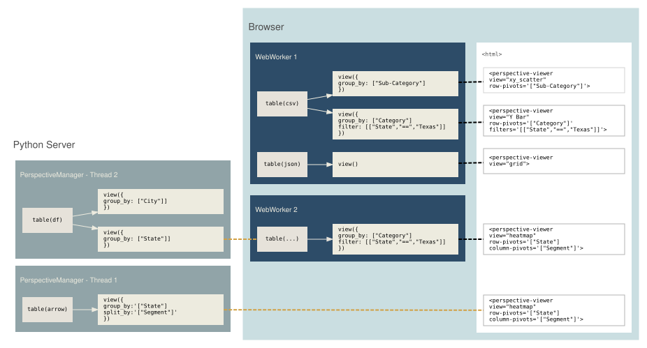
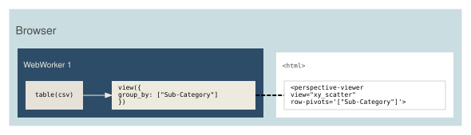
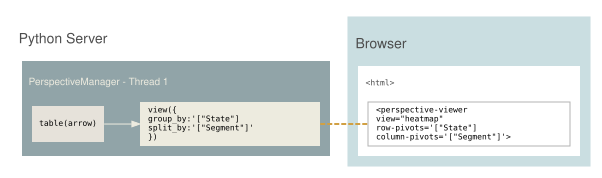
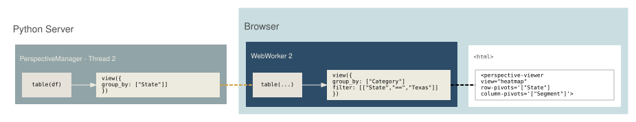

What is Perspective


Perspective is an interactive analytics and data visualization component for large, real-time and streaming datasets. Build user-configurable reports, dashboards, notebooks and applications, backed by a high-performance streaming query engine that runs in-browser via WebAssembly or server-side in Python, Node.js and Rust — or delegates to a database you already have.

Features
-
A data-reactive UI packaged as a Custom Element, with drag-and-drop query and layout configuration. Includes a virtual-scrolling, editable data grid, WebGL charting engine with 15+ chart types, tile-based geographic maps, full theme support, and React bindings.
-
A fast, memory-efficient streaming query engine written in C++ and compiled for WebAssembly (including a 64-bit
memory64build for in-browser datasets larger than 4GB), Python and Rust. Tables update incrementally and views tick in real time, with reactive joins across tables, a columnar expression language based on ExprTK, and read/write/streaming support for Apache Arrow, CSV and JSON. -
A symmetric client/server architecture — the same Client API connects to an engine in-process, in a Web Worker, or remotely over WebSocket, with server bindings for Python (aiohttp, Starlette, Tornado), Node.js and Rust. Datasets can be mirrored to the browser for fluid interaction or virtualized server-side, streaming only what’s visible.
-
Virtual servers that run Perspective’s UI directly on external engines like DuckDB, ClickHouse and Polars, translating view configurations into native queries — no ETL or data copy required.
-
A Jupyter widget built on anywidget and a Python client library for interactive data analysis in JupyterLab and other notebook environments.
Documentation
- Project Site
- User Guide
- JavaScript API
- Python API
- Rust API
Examples
| Superstore | Workspace | Webcam |
 |
 |
 |
| Raycasting | Market | NYPD |
 |
 |
 |
| Movies | Evictions | Fractal |
 |
 |
 |
Media
@timkpaine |
@timbess |
@sc1f |
 |
 |
 |
@texodus |
@texodus |
|
 |
 |
The Perspective project is a member of the The OpenJS Foundation.
Copyright OpenJS Foundation and Perspective contributors. All rights reserved. The OpenJS Foundation has registered trademarks and uses trademarks. For a list of trademarks of the OpenJS Foundation, please see our Trademark Policy and Trademark List. Trademarks and logos not indicated on the list of OpenJS Foundation trademarks are trademarks™ or registered® trademarks of their respective holders. Use of them does not imply any affiliation with or endorsement by them.
The OpenJS Foundation | Terms of Use | Privacy Policy | Bylaws | Code of Conduct | Trademark Policy | Trademark List | Cookie Policy
Data Architecture
Application developers can choose from Client (WebAssembly), Server (Python/Node) or Client/Server Replicated designs to bind data, and a web application can use one or a mix of these designs as needed. By serializing to Apache Arrow, tables are duplicated and synchronized across runtimes efficiently.
Perspective is a multi-language platform. The examples in this section use
Python and JavaScript as an example, but the same general principles apply to
any Client/Server combination.

Client-only

For static datasets, datasets provided by the user, and simple server-less and read-only web applications.
In this design, Perspective is run as a client Browser WebAssembly library, the dataset is downloaded entirely to the client and all calculations and UI interactions are performed locally. Interactive performance is very good, using WebAssembly engine for near-native runtime plus WebWorker isolation for parallel rendering within the browser. Operations like scrolling and creating new views are responsive. However, the entire dataset must be downloaded to the client. Perspective is not a typical browser component, and datset sizes of 1gb+ in Apache Arrow format will load fine with good interactive performance!
Horizontal scaling is a non-issue, since here is no concurrent state to scale, and only uses client-side computation via WebAssembly client. Client-only perspective can support as many concurrent users as can download the web application itself. Once the data is loaded, no server connection is needed and all operations occur in the client browser, imparting no additional runtime cost on the server beyond initial load. This also means updates and edits are local to the browser client and will be lost when the page is refreshed, unless otherwise persisted by your application.
As the client-only design starts with creating a client-side Perspective
Table, data can be provided by any standard web service in any Perspective
compatible format (JSON, CSV or Apache Arrow).
Javascript client
const worker = await perspective.worker();
const table = await worker.table(csv);
const viewer = document.createElement("perspective-viewer");
document.body.appendChild(viewer);
await viewer.load(table);
Client/Server replicated

For medium-sized, real-time, synchronized and/or editable data sets with many concurrent users.
The dataset is instantiated in-memory with a Python or Node.js Perspective server, and web applications create duplicates of these tables in a local WebAssembly client in the browser, synchonized efficiently to the server via Apache Arrow. This design scales well with additional concurrent users, as browsers only need to download the initial data set and subsequent update deltas, while operations like scrolling, pivots, sorting, etc. are performed on the client.
Python servers can make especially good use of additional threads, as Perspective will release the GIL for almost all operations. Interactive performance on the client is very good and identical to client-only architecture. Updates and edits are seamlessly synchonized across clients via their virtual server counterparts using websockets and Apache Arrow.
Python and Tornado server
from perspective import Server, PerspectiveTornadoHandler
server = Server()
client = server.new_local_client()
client.table(csv, name="my_table")
routes = [(
r"/websocket",
perspective.handlers.tornado.PerspectiveTornadoHandler,
{"perspective_server": server},
)]
app = tornado.web.Application(routes)
app.listen(8080)
loop = tornado.ioloop.IOLoop.current()
loop.start()
Javascript client
Perspective’s websocket client interfaces with the Python server, then replicates the server-side Table.
const websocket = await perspective.websocket("ws://localhost:8080");
const server_table = await websocket.open_table("my_table");
const server_view = await server_table.view();
const worker = await perspective.worker();
const client_table = await worker.table(server_view);
const viewer = document.createElement("perspective-viewer");
document.body.appendChild(viewer);
await viewer.load(client_table);
Server-only

For extremely large datasets with a small number of concurrent users.
The dataset is instantiated in-memory with a Python or Node.js server, and web applications connect virtually. Has very good initial load performance, since no data is downloaded. Group-by and other operations will run column-parallel if configured.
But interactive performance is poor, as every user interaction must page the server to render. Operations like scrolling are not as responsive and can be impacted by network latency. Web applications must be “always connected” to the server via WebSocket. Disconnecting will prevent any interaction, scrolling, etc. of the UI. Does not use WebAssembly.
Each connected browser will impact server performance as long as the connection
is open, which in turn impacts interactive performance of every client. This
ultimately limits the horizontal scalabity of this architecture. Since each
client reads the perspective Table virtually, changes like edits and updates
are automatically reflected to all clients and persist across browser refresh.
Using the same Python server as the previous design, we can simply skip the
intermediate WebAssembly Table and pass the virtual table directly to load()
const websocket = await perspective.websocket("ws://localhost:8080");
const server_table = await websocket.open_table("my_table");
const viewer = document.createElement("perspective-viewer");
document.body.appendChild(viewer);
await viewer.load(server_table);
Virtual Servers
A Virtual Server allows Perspective to query external data sources (such as DuckDB or ClickHouse) without loading the entire dataset into Perspective’s built-in data engine. Instead, Perspective translates its query operations (group by, sort, filter, etc.) into queries the external data source can execute natively, and only transfers the data needed for the current view.
The Virtual Server API works on any platform that has a Perspective Client —
including JavaScript (both Node.js and the browser via WebAssembly), Python, and
Rust. In the browser, this means a virtual server can front a WASM-based engine
like @duckdb/duckdb-wasm, giving <perspective-viewer> the ability to query a
database running entirely client-side without loading data into Perspective’s
own engine.
This is useful when:
- The dataset is too large to fit in browser memory or a single process.
- Data already lives in a database and you want to avoid duplicating it.
- You want to leverage a database’s native query optimizations.
- A WASM build of the data source is available in the browser (e.g.
@duckdb/duckdb-wasm) and you want to query it directly.
How it works
A virtual server implements a handler interface that Perspective calls to
satisfy Table and View operations. The handler translates Perspective’s view
configuration into the external system’s query language (typically SQL),
executes the query, and returns the results as columnar data. Because the
handler speaks the standard Perspective Client protocol, it can run anywhere a
Client can — in-process, in a WebWorker, or on a remote server.
┌──────────────────────────────────────────────────┐
│ <perspective-viewer> │
└──┬───────────────────────────────────────────────┘
│ ┌──────────────────────────────────────────────────┐
└──►│ Perspective Virtual Server Handler │
└──┬───────────────────────────────────────────────┘
│ ┌──────────────────────────────────────────────────┐
└──►│ External DB (DuckDB, ClickHouse, …). │
└──────────────────────────────────────────────────┘
The viewer communicates with the virtual server handler the same way it would with a regular Perspective server. The handler advertises its capabilities (which operations it supports) via a features object, and the viewer UI adapts accordingly — disabling controls for unsupported operations.
Built-in implementations
Perspective ships with virtual server implementations for:
- DuckDB — query DuckDB databases in-browser via WASM (JavaScript) or server-side (Python).
- ClickHouse — query a ClickHouse server from the browser (JavaScript) or from Python (Python).
Custom implementations
You can implement your own virtual server to connect Perspective to any data source. See the language-specific guides:
Features declaration
The get_features() / getFeatures() method returns an object that tells
Perspective which query operations the virtual server supports. The viewer will
only show controls for supported operations:
| Field | Type | Description |
|---|---|---|
group_by | bool | Whether group-by aggregation is supported |
split_by | bool | Whether split-by (pivot) is supported |
sort | bool | Whether sorting is supported |
expressions | bool | Whether computed expressions are supported |
filter_ops | dict | Map of column type to list of supported filter operators |
aggregates | dict | Map of column type to list of supported aggregate functions |
on_update | bool | Whether update callbacks are supported |
Table
Table is Perspective’s columnar data frame, analogous to a Pandas DataFrame
or Apache Arrow, supporting append & in-place updates, removal by index, and
update notifications.
A Table contains columns, each of which have a unique name, are strongly and
consistently typed, and contains rows of data conforming to the column’s type.
Each column in a Table must have the same number of rows, though not every row
must contain data; null-values are used to indicate missing values in the
dataset. The schema of a Table is immutable after creation, which means the
column names and data types cannot be changed after the Table has been
created. Columns cannot be added or deleted after creation either, but a View
can be used to select an arbitrary set of columns from the Table.
Schema and column types
The mapping of a Table’s column names to data types is referred to as a
schema. Each column has a unique name and a single data type, one of
floatintegerbooleandatedatetimestring
A Table schema is fixed at construction, either by explicitly passing a schema
dictionary to the Client::table method, or by passing data to this method
from which the schema is inferred (if CSV or JSON format) or inherited (if
Arrow).
Arrow type mapping
Perspective’s six column types are narrower than Arrow’s type system, so Arrow input is mapped on ingest:
| Arrow type | Perspective type |
|---|---|
int8, int16, int32, int64, uint8, uint16, uint32, uint64 | integer |
float, double | float |
decimal, decimal128 | float |
bool | boolean |
date32, date64 | date |
timestamp | datetime |
time32, time64 | integer |
utf8, large_utf8, binary, dictionary, list, null | string |
Two mappings are worth calling out:
- Arrow
decimalcolumns becomefloat— aDECIMALvalue of3.14reads as3.14, not as its unscaled integer representation. - Arrow
time32/time64(a time-of-day with no date component) becomesinteger, notdatetime. Use atimestampcolumn for a truedatetime.
Arrow types not listed above — including decimal256 and the nested types —
are rejected with an error rather than silently coerced.
Arrow input is fully validated before its buffers are read. A malformed IPC payload — bad offsets, out-of-range dictionary indices, inconsistent chunk lengths — is rejected with an error rather than producing corrupt data.
Type inference
When passing CSV or JSON data to the Client::table constructor, the type of
each column is inferred automatically. In some cases, the inference algorithm
may not return exactly what you’d like. For example, a column may be interpreted
as a datetime when you intended it to be a string, or a column may have no
values at all (yet), as it will be updated with values from a real-time data
source later on. In these cases, create a table() with a schema.
Once the Table has been created, further Table::update calls will perform
limited type coercion based on the schema. While coercion works similarly to
inference, in that input data may be parsed based on the expected column type,
Table::update will not change the column’s type further. For example, a
number literal 1234 would be inferred as an "integer", but in the context
of an Table::update call on a known "string" column, this will be parsed as
the string "1234".
date and datetime inference
Various string representations of date and datetime format columns can be
inferred as well coerced from strings if they match one of Perspective’s
internal known datetime parsing formats, for example
ISO 8601 (which is also the format
Perspective will output these types for CSV).
Loading data
A Table may also be created-or-updated by data in CSV,
Apache Arrow, JSON row-oriented or JSON
column-oriented formats. In addition to these, perspective-python additionally
supports pyarrow.Table, polars.DataFrame and pandas.DataFrame objects
directly. These formats are otherwise identical to the built-in formats and
don’t exhibit any additional support or type-awareness; e.g., pandas.DataFrame
support is just pyarrow.Table.from_pandas piped into Perspective’s Arrow
reader.
Client::table and Table::update perform coercion on their input for all
input formats except Arrow (which comes with its own schema and has no need
for coercion). "date" and "datetime" column types do not have native JSON
representations, so these column types cannot be inferred from JSON input.
Instead, for columns of these types for JSON input, a Table must first be
constructed with a schema. Next, call Table::update with the JSON input -
Perspective’s JSON reader may coerce a date or datetime from these native
JSON types:
integeras milliseconds-since-epoch.stringas a any of Perspective’s built-in date format formats.- JavaScript
Dateand Pythondatetime.dateanddatetime.datetimeare not supported directly. However, in JavaScriptDatetypes are automatically coerced to correctintegertimestamps by default when converted to JSON.
Apache Arrow
The most efficient way to load data into Perspective, encoded as Apache Arrow IPC format. In JavaScript:
const resp = await fetch(
"https://cdn.jsdelivr.net/npm/superstore-arrow/superstore.lz4.arrow",
);
const arrow = await resp.arrayBuffer();
Apache Arrow input do not support type coercion, preferring Arrow’s internal self-describing schema.
CSV
Perspective relies on Apache Arrow’s CSV parser, and as such uses mostly the same column-type inference logic as Arrow itself would use for parsing CSV.
Row Oriented JSON
Row-oriented JSON is in the form of a list of objects. Each object in the list corresponds to a row in the table. For example:
[
{ "a": 86, "b": false, "c": "words" },
{ "a": 0, "b": true, "c": "" },
{ "a": 12345, "b": false, "c": "here" }
]
Column Oriented JSON
Column-Oriented JSON comes in the form of an object of lists. Each key of the object is a column name, and each element of the list is the corresponding value in the row.
{
"a": [86, 0, 12345],
"b": [false, true, false],
"c": ["words", "", "here"]
}
NDJSON
NDJSON (sometimes also referred to as JSONL) is a streaming-friendly format where each line is a valid JSON object, separated by newlines. It is commonly used in data streaming and messaging queues.
{ "a": 86, "b": false, "c": "words" }
{ "a": 0, "b": true, "c": "" }
{ "a": 12345, "b": false, "c": "here" }
Construct a Table
Examples of constructing an empty Table from a schema.
JavaScript:
var schema = {
x: "integer",
y: "string",
z: "boolean",
};
const table2 = await worker.table(schema);
Python:
from datetime import date, datetime
schema = {
"x": "integer",
"y": "string",
"z": "boolean",
}
table2 = perspective.table(schema)
Rust:
#![allow(unused)]
fn main() {
let data = TableData::Schema(vec![(" a".to_string(), ColumnType::FLOAT)]);
let options = TableInitOptions::default();
let table = client.table(data.into(), options).await?;
}index and limit options
Index and Limit
Initializing a Table with an index tells Perspective to treat a column as
the primary key, allowing in-place updates of rows. Only a single column (of any
type) can be used as an index. Indexed Table instances allow:
- In-place updates whenever a new row shares an
indexvalues with an existing row - Partial updates when a data batch omits some column.
- Removes to delete a row by
index.
To create an indexed Table, provide the index property with a string column
name to be used as an index:
JavaScript:
const indexed_table = await perspective.table(data, { index: "a" });
Python
indexed_table = perspective.Table(data, index="a");
Initializing a Table with a limit sets the total number of rows the Table
is allowed to have. When the Table is updated, and the resulting size of the
Table would exceed its limit, rows that exceed limit overwrite the oldest
rows in the Table. To create a Table with a limit, provide the limit
property with an integer indicating the maximum rows:
JavaScript:
const limit_table = await perspective.table(data, { limit: 1000 });
Python:
limit_table = perspective.Table(data, limit=1000);
Table::update and Table::remove
Once a Table has been created, it can be updated with new data conforming to
the Table’s schema. Table::update supports the same data formats as
Client::table, minus schema.
const schema = {
a: "integer",
b: "float",
};
const table = await perspective.table(schema);
table.update(new_data);
schema = {"a": "integer", "b": "float"}
table = perspective.Table(schema)
table.update(new_data)
Without an index set, calls to update() append new data to the end of the
Table. Otherwise, Perspective allows
partial updates (in-place) using the index to determine
which rows to update:
indexed_table.update({ id: [1, 4], name: ["x", "y"] });
indexed_table.update({"id": [1, 4], "name": ["x", "y"]})
Any value on a Client::table can be unset using the value null in JSON or
Arrow input formats. Values may be unset on construction, as any null in the
dataset will be treated as an unset value. Table::update calls do not need to
provide all columns in the Table’s schema; missing columns will be omitted
from the Table’s updated rows.
table.update([{ x: 3, y: null }]); // `z` missing
table.update([{"x": 3, "y": None}]) # `z` missing
Rows can also be removed from an indexed Table, by calling Table::remove
with an array of index values:
indexed_table.remove([1, 4]);
indexed_table.remove([1, 4])
Table::clear and Table::replace
Calling Table::clear will remove all data from the underlying Table. Calling
Table::replace with new data will clear the Table, and update it with a new
dataset that conforms to Perspective’s data types and the existing schema on the
Table.
table.clear();
table.replace(json);
table.clear()
table.replace(df)
View
The [View] struct is Perspective’s query and serialization interface. It
represents a query on the Table’s dataset and is always created from an
existing Table instance via the [Table::view] method.
[View]s are immutable with respect to the arguments provided to the
[Table::view] method; to change these parameters, you must create a new
[View] on the same [Table]. However, each [View] is live with respect to
the [Table]’s data, and will (within a conflation window) update with the
latest state as its parent [Table] updates, including incrementally
recalculating all aggregates, pivots, filters, etc. [View] query parameters
are composable, in that each parameter works independently and in conjunction
with each other, and there is no limit to the number of pivots, filters, etc.
which can be applied.
perspective docs for the Rust API.
perspective docs for the Rust API.
Examples
const table = await perspective.table({
id: [1, 2, 3, 4],
name: ["a", "b", "c", "d"],
});
const view = await table.view({ columns: ["name"] });
const json = await view.to_json();
await view.delete();
table = perspective.Table({
"id": [1, 2, 3, 4],
"name": ["a", "b", "c", "d"]
});
view = table.view(columns=["name"])
arrow = view.to_arrow()
view.delete()
#![allow(unused)]
fn main() {
let opts = TableInitOptions::default();
let data = TableData::Update(UpdateData::Csv("x,y\n1,2\n3,4".into()));
let table = client.table(data, opts).await?;
let view = table.view(None).await?;
let arrow = view.to_arrow().await?;
view.delete().await?;
}Querying data
To query the table, create a [Table::view] on the table instance with an
optional configuration object. A [Table] can have as many [View]s associated
with it as you need - Perspective conserves memory by relying on a single
[Table] to power multiple [View]s concurrently:
const view = await table.view({
columns: ["Sales"],
aggregates: { Sales: "sum" },
group_by: ["Region", "Country"],
filter: [["Category", "in", ["Furniture", "Technology"]]],
});
view = table.view(
columns=["Sales"],
aggregates={"Sales": "sum"},
group_by=["Region", "Country"],
filter=[["Category", "in", ["Furniture", "Technology"]]]
)
#![allow(unused)]
fn main() {
use crate::config::*;
let view = table
.view(Some(ViewConfigUpdate {
columns: Some(vec![Some("Sales".into())]),
aggregates: Some(HashMap::from_iter(vec![("Sales".into(), "sum".into())])),
group_by: Some(vec!["Region".into(), "Country".into()]),
filter: Some(vec![Filter::new("Category", "in", &[
"Furniture",
"Technology",
])]),
..ViewConfigUpdate::default()
}))
.await?;
}Grouping and Pivots
Group By
A group by groups the dataset by the unique values of each column used as a
group by - a close analogue in SQL to the GROUP BY statement. The underlying
dataset is aggregated to show the values belonging to each group, and a total
row is calculated for each group, showing the currently selected aggregated
value (e.g. sum) of the column. Group by are useful for hierarchies,
categorizing data and attributing values, i.e. showing the number of units sold
based on State and City. In Perspective, group by are represented as an array of
string column names to pivot, are applied in the order provided; For example, a
group by of ["State", "City", "Postal Code"] shows the values for each Postal
Code, which are grouped by City, which are in turn grouped by State.
const view = await table.view({ group_by: ["a", "c"] });
view = table.view(group_by=["a", "c"])
#![allow(unused)]
fn main() {
let view = table.view(Some(ViewConfigUpdate {
group_by: Some(vec!["a".into(), "c".into()]),
..ViewConfigUpdate::default()
})).await?;
}group_rollup_mode
The group_rollup_mode option controls how the grouped rows themselves render:
"rollup"(the default) - the full hierarchy, with a subtotal row for every group at every level and a grand total row, each addressable by its__ROW_PATH__."flat"- leaf rows only, one row per deepest-level group, with no subtotal or grand total rows. Useful for chart plugins and exports where subtotal rows would double-count."total"- the grand total row only."total"is mutually exclusive withgroup_by(which is cleared when it is set) - it is the one shape an emptygroup_bycannot express, since nogroup_byat all yields the unaggregated dataset.
const view = await table.view({
group_by: ["a"],
group_rollup_mode: "flat",
});
view = table.view(group_by=["a"], group_rollup_mode="flat")
#![allow(unused)]
fn main() {
let view = table.view(Some(ViewConfigUpdate {
group_by: Some(vec!["a".into()]),
group_rollup_mode: Some(GroupRollupMode::Flat),
..ViewConfigUpdate::default()
})).await?;
}Split By
A split by splits the dataset by the unique values of each column used as a
split by. The underlying dataset is not aggregated, and a new column is created
for each unique value of the split by. Each newly created column contains the
parts of the dataset that correspond to the column header, i.e. a View that
has ["State"] as its split by will have a new column for each state. In
Perspective, Split By are represented as an array of string column names to
pivot:
const view = await table.view({ split_by: ["a", "c"] });
view = table.view(split_by=["a", "c"])
#![allow(unused)]
fn main() {
let view = table.view(Some(ViewConfigUpdate {
split_by: Some(vec!["a".into(), "c".into()]),
..ViewConfigUpdate::default()
})).await?;
}split_rollup_mode
The split_rollup_mode option is the split_by counterpart to
group_rollup_mode, controlling whether subtotal
column groups are emitted:
"flat"(the default) - only full-depth split combinations appear as columns, e.g."CA|Sales". This is Perspective’s historical behavior."rollup"- additionally emits a grand-total column per aggregate (named by the bare column name, e.g."Sales", aggregating across every split group) and, when more than onesplit_bycolumn is applied, a subtotal column per intermediate split group (e.g."CA|Sales"alongside"CA|First Class|Sales"). Total and subtotal columns precede their groups, in pre-order.
const view = await table.view({
group_by: ["State"],
split_by: ["Ship Mode"],
split_rollup_mode: "rollup",
});
view = table.view(
group_by=["State"],
split_by=["Ship Mode"],
split_rollup_mode="rollup",
)
#![allow(unused)]
fn main() {
let view = table.view(Some(ViewConfigUpdate {
group_by: Some(vec!["State".into()]),
split_by: Some(vec!["Ship Mode".into()]),
split_rollup_mode: Some(SplitRollupMode::Rollup),
..ViewConfigUpdate::default()
})).await?;
}Aggregates
Aggregates perform a calculation over an entire column, and are displayed when
one or more Group By are applied to the View. Aggregates can be
specified by the user, or Perspective will use the following sensible default
aggregates based on column type:
- “sum” for
integerandfloatcolumns - “count” for all other columns
Perspective provides a selection of aggregate functions that can be applied to
columns in the View constructor using a dictionary of column name to aggregate
function name.
const view = await table.view({
aggregates: {
a: "avg",
b: "distinct count",
},
});
view = table.view(
aggregates={
"a": "avg",
"b": "distinct count"
}
)
#![allow(unused)]
fn main() {
use std::collections::HashMap;
let view = table.view(Some(ViewConfigUpdate {
aggregates: Some(HashMap::from([
("a".into(), "avg".into()),
("b".into(), "distinct count".into()),
])),
..ViewConfigUpdate::default()
})).await?;
}Every aggregate is described below, grouped by what it computes. Which of them a given column accepts depends on its type — see Availability by column type.
Sums and products
| Aggregate | Description | Result type |
|---|---|---|
sum | Total of the group’s values | integer or float |
sum not null | As sum, but non-finite (NaN) values are skipped rather than poisoning the total | integer or float |
sum abs | Sum of the absolute values — Σ abs(v) | integer or float |
abs sum | Absolute value of the sum — abs(Σ v) | integer or float |
mul | Product of the group’s values | integer or float |
gmv | Gross market value — leaf rows are a plain sum, parent rows sum the absolute subtotal of each immediate child group | integer or float |
pct sum parent | The group’s sum as a percentage of its parent row’s, 0–100; 100 at the root, and null when the parent’s sum is 0 | float |
pct sum total | The group’s sum as a percentage of the grand total, 0–100 | float |
A numeric aggregate widens to the input’s numeric class — integer columns
accumulate as integer, float columns as float.
Averages and dispersion
| Aggregate | Description | Result type |
|---|---|---|
avg | Arithmetic mean of the non-null values | float |
weighted mean | Σ(value × weight) / Σ(weight), over rows where both the value and the weight are non-null and finite; null when the weights sum to 0. Takes a weight column as an argument | float |
stddev | Population standard deviation | float |
var | Population variance — divides by N, not N - 1 | float |
stddev and var are null for a group of fewer than two non-null values.
Extrema and order statistics
| Aggregate | Description | Result type |
|---|---|---|
min, max | Smallest and largest of the group’s current values | input type |
min by, max by | The value from the row at which a second column, supplied as an argument, is smallest or largest | input type |
high, low | High and low water mark — the largest and smallest value this View has ever observed for the group, which never moves back when rows are updated or removed | input type |
high minus low | max - min of the group’s current values, i.e. its range. Despite the name this uses min/max, not the water marks | input type |
median, q1, q3 | The value at the 50%, 25% and 75% position of the group’s values; on float columns an exact split averages the two adjacent values | input type |
Positional
| Aggregate | Description | Result type |
|---|---|---|
first | Value from the group’s earliest row | input type |
last by index | Value from the group’s latest row | input type |
last minus first | last by index minus first | input type |
last | Value from the group’s most recently updated row | input type |
“Earliest” and “latest” are by the Table’s index column, or by row order
when the Table is unindexed. This is not the same as last, which tracks
update recency rather than position.
Cardinality and identity
| Aggregate | Description | Result type |
|---|---|---|
count | Number of rows in the group | integer |
distinct count | Number of distinct values in the group | integer |
unique | The group’s value when every row shares one, otherwise null | input type |
distinct leaf | As unique, but only on leaf rows — parent rows are blank | input type |
dominant | The most frequent non-null value, i.e. the mode; a tie resolves to whichever value reached the winning count first | input type |
any | The group’s first truthy value — any non-null value for string columns, the first non-zero for numbers and dates, the first true for boolean — or null if it has none | input type |
or | Identical to any | input type |
and | true when every value in the group is truthy, else false | boolean |
join | The group’s distinct values, sorted and rendered as a ", "-delimited string, truncated at 280 characters. Nulls render as null | string |
Nulls
Null handling is not uniform, and is usually what makes two similar-looking aggregates differ:
countcounts rows, not values — a group of 3 rows whose value isnullcounts3. This is not the same as thecountwindow aggregate, which counts non-null values.distinct countcountsnullas one distinct value, so a group of[1, null, null]counts2.sum,avg,stddev,var,dominantandweighted meanskip nulls entirely.avgdivides by the count of non-null values, so a group of all nulls isnullrather than0.anyandorreturn the first truthy value, not the first non-null one — a numeric group of all0, or abooleangroup of allfalse, aggregates tonull.joinrenders nulls into its output as the literal textnull.
Availability by column type
The aggregates a column accepts depend on its type:
Numeric columns (integer, float): sum, abs sum, sum abs,
sum not null, mul, gmv, any, avg, mean, count, distinct count,
distinct leaf, dominant, first, last, last by index, high, low,
max, min, min by, max by, high minus low, last minus first,
median, q1, q3, pct sum parent, pct sum total, stddev, var,
unique, weighted mean.
String columns: count, any, distinct count, distinct leaf,
dominant, first, last, last by index, join, median, q1, q3,
unique, min by, max by.
Date/Datetime columns: count, any, avg, distinct count,
distinct leaf, dominant, first, last, last by index, high, low,
max, min, median, q1, q3, unique.
Boolean columns: count, any, and, or, distinct count,
distinct leaf, dominant, first, last, last by index, unique.
avg on a date or
datetime column returns a float — the mean of the
column's underlying numeric representation — not a date.Argument-taking aggregates
weighted mean, min by and max by each read a second column, and are
written as a [name, [argument]] pair rather than a bare string:
const view = await table.view({
aggregates: { a: ["weighted mean", ["b"]] },
});
view = table.view(aggregates={"a": ("weighted mean", ["b"])})
#![allow(unused)]
fn main() {
let view = table.view(Some(ViewConfigUpdate {
aggregates: Some(HashMap::from([(
"a".into(),
Aggregate::MultiAggregate("weighted mean".into(), vec!["b".into()]),
)])),
..ViewConfigUpdate::default()
})).await?;
}Aggregate::from(&str) splits on
" by " to build a MultiAggregate. Single aggregates
whose names contain that substring — "last by index" — must
therefore be constructed as
Aggregate::SingleAggregate("last by index".into()) rather than
"last by index".into(), which silently resolves to
last.Aliases
Several aggregates answer to more than one name. Every name below is accepted anywhere an aggregate is, and each group refers to one function:
| Canonical | Also accepted |
|---|---|
avg | mean |
distinct count | distinct, distinctcount, distinct_count |
first | first by index |
last | last_value |
high | high_water_mark |
low | low_water_mark |
pct sum total | pct sum grand total, pct_sum_grand_total |
var | variance |
stddev | standard deviation |
Most multi-word aggregates also answer to a snake_case spelling —
sum_not_null, sum_abs, abs_sum, weighted_mean, distinct_leaf,
pct_sum_parent, pct_sum_total, min_by, max_by. Three do not, and are
only accepted spelled with spaces: high minus low, last minus first and
last by index.
A few names the engine parses are not implemented — identity,
mean by count, and div/add, which have no way to receive their operands
from a ViewConfig. Naming one is rejected exactly as a misspelled aggregate
is: the View fails to construct with an error naming the aggregate and the
column it was given for, and the Table is left untouched.
Selection and Ordering
Columns
The columns property specifies which columns should be included in the
View’s output. This allows users to show or hide a specific subset of columns,
as well as control the order in which columns appear to the user. This is
represented in Perspective as an array of string column names:
const view = await table.view({
columns: ["a"],
});
view = table.view(columns=["a"])
#![allow(unused)]
fn main() {
let view = table.view(Some(ViewConfigUpdate {
columns: Some(vec![Some("a".into())]),
..ViewConfigUpdate::default()
})).await?;
}Sort
The sort property specifies columns on which the query should be sorted,
analogous to ORDER BY in SQL. A column can be sorted regardless of its data
type, and sorts can be applied in ascending or descending order. Perspective
represents sort as an array of arrays, with the values of each inner array
being a string column name and a string sort direction. When split_by are
applied, the additional sort directions "col asc" and "col desc" will
determine the order of pivot column groups.
const view = await table.view({
sort: [["a", "asc"]],
});
view = table.view(sort=[["a", "asc"]])
#![allow(unused)]
fn main() {
let view = table.view(Some(ViewConfigUpdate {
sort: Some(vec![Sort("a".into(), SortDir::Asc)]),
..ViewConfigUpdate::default()
})).await?;
}The available sort directions are:
| Direction | Description |
|---|---|
"asc" | Ascending order |
"desc" | Descending order |
"asc abs" | Ascending by absolute value |
"desc abs" | Descending by absolute value |
"col asc" | Ascending order for pivot column groups (requires split_by) |
"col desc" | Descending order for pivot column groups (requires split_by) |
"col asc abs" | Ascending by absolute value for pivot column groups |
"col desc abs" | Descending by absolute value for pivot column groups |
Filter
The filter property specifies columns on which the query can be filtered,
returning rows that pass the specified filter condition. This is analogous to
the WHERE clause in SQL. There is no limit on the number of columns where
filter is applied, but the resulting dataset is one that passes all the filter
conditions, i.e. the filters are joined with an AND condition. The join
condition can be changed to OR via the filter_op property.
Perspective represents filter as an array of arrays, with the values of each
inner array being a string column name, a string filter operator, and a filter
operand in the type of the column:
const view = await table.view({
filter: [["a", "<", 100]],
});
view = table.view(filter=[["a", "<", 100]])
#![allow(unused)]
fn main() {
let view = table.view(Some(ViewConfigUpdate {
filter: Some(vec![Filter::new("a", "<", FilterTerm::Scalar(Scalar::Float(100.0)))]),
..ViewConfigUpdate::default()
})).await?;
}The available filter operators depend on the column type:
String columns: ==, !=, >, >=, <, <=, begins with,
not begins with, contains, not contains, ends with, not ends with,
matches, not matches, in, not in, is not null, is null.
The string matching operators (begins with, contains, ends with and
their negations) are case-insensitive, and matches / not matches are
case-sensitive partial-match RE2 regular
expressions. Null cells match none of these operators, including the negated
forms - filter on is null to select them.
Numeric columns (integer, float): ==, !=, >, >=, <, <=,
is not null, is null.
Boolean columns: ==, is not null, is null.
Date/Datetime columns: ==, !=, >, >=, <, <=, is not null,
is null.
Expressions
The expressions property specifies new columns in Perspective that are
created using existing column values or arbitrary scalar values defined within
the expression. In <perspective-viewer>, expressions are added using the “New
Column” button in the side panel.
Expressions are strings parsed by Perspective’s expression engine (based on
ExprTK). Column names are referenced by
wrapping them in double quotes, e.g. "Sales":
const view = await table.view({
expressions: {
"Profit Ratio": '"Profit" / "Sales"',
},
});
view = table.view(expressions={'Profit Ratio': '"Profit" / "Sales"'})
#![allow(unused)]
fn main() {
let view = table.view(Some(ViewConfigUpdate {
expressions: Some(Expressions([
("Profit Ratio", "\"Profit\" / \"Sales\"".into())
].into_iter().collect())),
..ViewConfigUpdate::default()
})).await?;
}Type Conversion and Coercion
Perspective expressions are strongly typed — each column and literal has a fixed type, and most operators require matching types on both sides. To work across types, use the conversion functions:
| Function | Description |
|---|---|
to_string(x) | Convert any type to string |
to_integer(x) | Convert to integer (null if not parsable) |
to_float(x) | Convert to float (null if not parsable) |
to_boolean(x) | Convert to boolean (truthy/falsy) |
integer(x) | Alias for to_integer(x) |
float(x) | Alias for to_float(x) |
datetime(x) | Construct a datetime from a POSIX timestamp (ms since epoch) |
date(y, m, d) | Construct a date from year, month, day |
How coercion works
Perspective does not implicitly coerce types. For example, you cannot directly
add an integer to a float — you must cast one side explicitly. Similarly,
datetime and date values are not numeric: to perform arithmetic on them, you
must first convert to a numeric representation, do the math, then convert back.
Internally, datetime values are stored as milliseconds since the Unix epoch
(1970-01-01T00:00:00Z). Converting a datetime to a float yields this
millisecond timestamp, and datetime() accepts a millisecond timestamp to
produce a datetime.
Example: offsetting a datetime by 7 days
This expression takes a "Shipped Date" column, converts it to its
millisecond-epoch representation, adds 7 days worth of milliseconds (7 ×
24 × 60 × 60 × 1000 = 604800000), and converts the result back
to a datetime:
// Due Date
datetime(float("Shipped Date") + 604800000)
Operators
Standard arithmetic and comparison operators are supported:
| Operator | Description |
|---|---|
+, -, *, / | Arithmetic |
% | Modulo |
==, !=, <, >, <=, >= | Comparison |
and, or, not | Logical |
if ... else ... | Conditional |
Numeric Functions
ExprTK provides a rich set of built-in numeric functions including abs,
ceil, floor, round, exp, log, log10, sqrt, min, max, pow,
clamp, iclamp, inrange, and trigonometric functions (sin, cos, tan,
asin, acos, atan).
String Functions
| Function | Description |
|---|---|
concat(a, b, ...) | Concatenate strings |
upper(s) | Convert to uppercase |
lower(s) | Convert to lowercase |
length(s) | String length |
contains(s, substr) | Whether s contains substr |
order(col, 'B', 'C', 'A') | Custom sort order for a string column |
match(s, pattern) | Regex partial match (returns boolean) |
match_all(s, pattern) | Regex full match (returns boolean) |
search(s, pattern) | First capturing group match |
indexof(s, pattern) | Start index of first regex match |
substring(s, start, end) | Substring from start (inclusive) to end (exclusive) |
replace(s, repl, pattern) | Replace first regex match |
replace_all(s, repl, pattern) | Replace all regex matches |
Date/Datetime Functions
| Function | Description |
|---|---|
today() | Current date |
now() | Current datetime |
date(year, month, day) | Construct a date |
datetime(timestamp_ms) | Construct a datetime from a POSIX timestamp (ms since epoch) |
hour_of_day(dt) | Hour component (0-23) |
day_of_week(dt) | Day of the week as a string |
month_of_year(dt) | Month of the year as a string |
bucket(dt, unit) | Bucket datetime by unit: 's', 'm', 'h', 'D', 'W', 'M', 'Y' |
bucket also works on numeric columns: bucket("Price", 10) rounds values down
to the nearest multiple of 10.
Other Functions
| Function | Description |
|---|---|
is_null(x) | Whether the value is null |
is_not_null(x) | Whether the value is not null |
percent_of(a, b) | a as a percentage of b |
inrange(low, val, high) | Whether val is between low and high (inclusive) |
min(a, b, ...) | Minimum of inputs |
max(a, b, ...) | Maximum of inputs |
random() | Random float between 0.0 and 1.0 |
col(name) | Look up a column by string name at runtime |
vlookup(col, key) | Look up a value in another column by row key |
See also
Expressions are row-local — each output cell is computed from that row’s values alone. For calculations which span rows, such as moving averages, cumulative sums or period-over-period differences, see Window Columns.
Window Columns
The windows property declares ordered, partitioned rolling computations
over the rows of a Table — moving averages, cumulative sums,
period-over-period differences — analogous to SQL window functions.
Window Columns are declared per-View, keyed by output alias, exactly as
expressions are:
const view = await table.view({
columns: ["10-tick avg Sales"],
windows: {
"10-tick avg Sales": {
column: "Sales",
aggregate: "avg",
rows: 10,
},
},
});
view = table.view(
columns=["10-tick avg Sales"],
windows={
"10-tick avg Sales": {
"column": "Sales",
"aggregate": "avg",
"rows": 10,
}
},
)
Each window produces a new column which may be used anywhere a Table column
can — in columns, filter, sort, group_by, and so on. An alias must not
collide with a Table column, an expression alias, or another window’s key.
Window Columns update incrementally as the Table updates, including rows
outside an update batch whose window frames were affected by it.
Spec fields
| Field | Type | Description |
|---|---|---|
column | string | The input column — a Table column or an expression alias from the same config |
aggregate | string | The window function to apply (see below) |
partition_by | string[] | Columns whose distinct value tuples partition the rows; omitted partitions the whole Table as one group |
order_by | [string, "asc" | "desc"] | The column which orders each partition, and its direction |
rows | integer | Frame of the N rows preceding each row, plus the row itself |
range | number | Frame of rows whose order_by value lies within range of each row’s |
cumulative | true | Frame of all rows from the partition start through each row |
offset | integer | Row offset for lag/lead (default 1) |
alpha | number | Smoothing factor in (0, 1] for ema |
rows, range and cumulative are mutually exclusive — supplying more
than one is an error. range requires a numeric or temporal order_by.
order_by orders rows within the window
frame only. It does not reorder the View — that is what the
view-level sort
property does.Aggregates
| Aggregate | Description | Result type |
|---|---|---|
sum, avg | Rolling sum and mean over the frame | float |
stddev, var | Rolling standard deviation and variance | float |
count | Number of non-null values in the frame | integer |
min, max | Smallest and largest value in the frame | input type |
lag, lead | Value offset rows behind or ahead | input type |
diff | This row’s value minus the value offset rows behind | float |
rate | Rate of change across the frame | float |
ema | Exponential moving average, smoothed by alpha | float |
sum, avg, stddev, var, diff, rate and ema require a numeric
input column.
Frame compatibility
sum,avg,count,min,max,stddevandvaraccept any frame.lag,lead,diffandemaare frame-independent — they are computed from row offsets rather than a frame.raterequires arangeframe, and is invalid withrowsorcumulative.
first and last window
aggregates are declared in the type definitions but are not yet
implemented by the engine; a View which uses them will be
rejected.Examples
Moving average over a fixed row count
A 10-tick moving average, over the whole table in its natural order:
{
"columns": ["10-tick avg Sales"],
"windows": {
"10-tick avg Sales": {
"column": "Sales",
"aggregate": "avg",
"rows": 10
}
}
}
Moving average over a time range
A 5-second moving average, framing rows by their Order Date rather than by
count:
{
"columns": ["5s avg Sales"],
"windows": {
"5s avg Sales": {
"column": "Sales",
"aggregate": "avg",
"order_by": ["Order Date", "asc"],
"range": 5000
}
}
}
Cumulative sum
A running total from the start of each partition:
{
"columns": ["Cumulative Sales"],
"windows": {
"Cumulative Sales": {
"column": "Sales",
"aggregate": "sum",
"order_by": ["Order Date", "asc"],
"cumulative": true
}
}
}
Period-over-period change, per group
partition_by restarts the window at each new Region, so each region’s
first row has no predecessor to difference against:
{
"columns": ["Region", "Sales", "Sales Δ"],
"windows": {
"Sales Δ": {
"column": "Sales",
"aggregate": "diff",
"partition_by": ["Region"],
"order_by": ["Order Date", "asc"]
}
}
}
Support
Window Columns are implemented by Perspective’s built-in engine, by the
DuckDB, ClickHouse and Polars
Virtual Servers, and by the
<perspective-viewer> UI. Virtual Servers advertise support through their
features declaration, so the UI control is hidden for backends which do not
implement it.
Advanced View Operations
Beyond the standard query configuration, View provides additional methods for
interacting with hierarchical results and introspecting data.
Tree Hierarchy Operations
When a View has group_by applied, the results form a tree hierarchy.
Perspective provides methods to control which levels of the tree are expanded or
collapsed:
const view = await table.view({ group_by: ["Region", "Country", "City"] });
// Collapse the tree at row index 5
await view.collapse(5);
// Expand the tree at row index 5
await view.expand(5);
// Set the expansion depth (0 = fully collapsed, 1 = first level, etc.)
await view.set_depth(1);
Using the sync API
view = table.view(group_by=["Region", "Country", "City"])
view.collapse(5)
view.expand(5)
view.set_depth(1)
#![allow(unused)]
fn main() {
let view = table.view(Some(ViewConfigUpdate {
group_by: Some(vec!["Region".into(), "Country".into(), "City".into()]),
..ViewConfigUpdate::default()
})).await?;
view.collapse(5).await?;
view.expand(5).await?;
view.set_depth(1).await?;
}Perspective’s built-in engine is lazy — aggregates for
collapsed rows are not recalculated when the underlying Table is updated.
Updates are only computed for rows that are currently visible (expanded). When a
collapsed row is later expanded, its aggregates are calculated at that
point.
Column Range Queries
View::get_min_max returns the minimum and maximum values for a given column,
which is useful for setting up scales in custom visualizations:
const [min, max] = await view.get_min_max("Sales");
min_val, max_val = view.get_min_max("Sales")
Expression Validation
Before creating a View with expressions, you can validate them against the
table’s schema using Table::validate_expressions. This returns information
about which expressions are valid and their inferred types:
const result = await table.validate_expressions({
expr1: '"Sales" + "Profit"',
expr2: "invalid_column + 1",
});
// result.expression_schema contains valid expressions and their types
// result.errors contains invalid expressions and error messages
result = table.validate_expressions(['"Sales" + "Profit"', 'invalid + 1'])
View Dimensions
View::dimensions returns the number of rows and columns in the current view,
including information about group-by header rows:
const dims = await view.dimensions();
// { num_view_rows, num_view_columns, num_table_rows, num_table_columns, ... }
dims = view.dimensions()
View Configuration Introspection
View::get_config returns the full configuration used to create the view:
const config = await view.get_config();
// { group_by: [...], split_by: [...], sort: [...], filter: [...], ... }
config = view.get_config()
Update Callbacks
Register a callback to be notified whenever the underlying Table is updated
and the View has been recalculated:
view.on_update(
(updated) => {
console.log("View updated", updated.port_id);
},
{ mode: "row" },
);
// Later, remove the callback
view.remove_update(callback);
def on_update(port_id, delta):
print("View updated", port_id)
view.on_update(on_update, mode="row")
view.remove_update(on_update)
When mode is set to "row", the callback receives a delta of only the rows
that changed (as Apache Arrow), which is useful for efficiently synchronizing
tables across clients.
Flattening a View into a Table
A [Table] can be constructed on a [Table::view] instance, which will return
a new [Table] based on the [Table::view]’s dataset, and all future updates
that affect the [Table::view] will be forwarded to the new [Table]. This is
particularly useful for implementing a
Client/Server Replicated design, as it
handles the View serialization and on_update forwarding for you. This
pattern is available in JavaScript, Python and Rust.
const worker = await perspective.worker();
const table = await worker.table(data);
const view = await table.view({ filter: [["State", "==", "Texas"]] });
const table2 = await worker.table(view);
table.update([{ State: "Texas", City: "Austin" }]);
table = client.table(data)
view = table.view(filter=[["State", "==", "Texas"]])
table2 = client.table(view)
table.update([{"State": "Texas", "City": "Austin"}])
#![allow(unused)]
fn main() {
let opts = TableInitOptions::default();
let data = TableData::Update(UpdateData::Csv("x,y\n1,2\n3,4".into()));
let table = client.table(data, opts).await?;
let view = table.view(None).await?;
let table2 = client.table(TableData::View(view)).await?;
table.update(data).await?;
}Join
Client::join creates a read-only Table by joining two source tables on a
shared key column. The left and right arguments can be Table objects or
string table names (as returned by get_hosted_table_names()). The resulting
table is reactive: whenever either source table is updated, the join is
automatically recomputed and any View derived from the joined table will
update accordingly.
Joined tables support the full View API — you can apply group_by,
split_by, sort, filter, expressions, and all other View operations on
the result, just as you would with any other Table.
Join Types
Client::join supports three join types, specified via the join_type option.
The default is "inner".
Inner Join (default)
An inner join includes only rows where the key column exists in both source tables. Rows from either table that have no match in the other are excluded.
Left Join
A left join includes all rows from the left table. For left rows that have no
match in the right table, right-side columns are filled with null.
Outer Join
An outer join includes all rows from both tables. Unmatched rows on either side
have their missing columns filled with null.
join_type | Left-only rows | Right-only rows |
|---|---|---|
"inner" | excluded | excluded |
"left" | included | excluded |
"outer" | included | included |
Join Options
on — Join Key Column
The on parameter specifies the column name used to match rows between the left
and right tables. This column must exist in the left table and, by default, must
also exist in the right table with the same name and compatible type.
The join key column becomes the index of the resulting table.
right_on — Different Right Key Column
When the join key has a different name in the right table, use right_on to
specify the right table’s column name. The left table’s column name (on) is
used in the output schema; the right key column is excluded from the result.
The on and right_on columns must have compatible types. An error is thrown
if the types do not match.
join_type — Join Type
Controls which rows are included in the result. See Join Types for details.
| Value | Behavior |
|---|---|
"inner" | Only rows with matching keys in both tables (default) |
"left" | All left rows; unmatched right columns are null |
"outer" | All rows from both tables; unmatched columns are null |
name — Table Name
An optional name for the resulting joined table. If omitted, a random name is generated. This name is used to identify the table in the server’s hosted table registry.
Reactivity and Constraints
Reactive Updates
Joined tables are fully reactive. When either source table receives an
update(), the join is automatically recomputed and any View created from the
joined table will reflect the new data. This includes:
- Updates that modify existing rows in either source table.
- New rows added to either source table that create new matches.
- Chained joins — if a joined table is itself used as input to another join, updates propagate through the entire chain.
Duplicate Keys
Like SQL, join() produces a cross-product for each matching key value. When
multiple rows in the left table share the same key, each is paired with every
matching row in the right table (and vice versa). The number of output rows for
a given key is left_count × right_count.
This behavior depends on whether the source tables are indexed:
- Unindexed tables (no
indexoption) — rows are appended, so duplicate keys accumulate naturally. Eachupdate()appends new rows, which may introduce additional duplicates. - Indexed tables (
indexset to the join key) — each key appears at most once per table, so the join produces at most one row per key. Updates replace existing rows in-place rather than appending.
Read-Only
Joined tables are read-only. Calling update(), remove(), clear(), or
replace() on a joined table will throw an error. Data can only change
indirectly, by updating the source tables.
Column Name Conflicts
The left and right tables must not have overlapping column names (other than the
join key). If a non-key column name appears in both tables, join() throws an
error. Rename columns in your source data or use View expressions to avoid
conflicts.
Source Table Deletion
A source table cannot be deleted while a joined table depends on it. You must delete the joined table first, then delete the source tables.
JavaScript Installation and Module Structure
Perspective is designed for flexibility, allowing developers to pick and choose which modules they need. The main modules are:
-
@perspective-dev/clientThe data engine library, as both a browser ES6 and Node.js module. Provides a WebAssembly, WebWorker (browser) and Process (node.js) runtime. -
@perspective-dev/viewerA user-configurable visualization widget, bundled as a Web Component. This module includes the core data engine module as a dependency.
<perspective-viewer> by itself only implements a trivial debug renderer, which
prints the currently configured view() as a CSV. Plugin modules are packaged
separately and must be imported individually.
-
@perspective-dev/viewer-datagridA custom high-performance data-grid component based on HTML<table>. -
@perspective-dev/viewer-chartsA set of charting components base on WebGL.
When imported after @perspective-dev/viewer, the plugin modules will register
themselves automatically, and the renderers they export will be available in the
plugin dropdown in the <perspective-viewer> UI.
Browser
Perspective’s WebAssembly data engine is available via NPM in the same package
as its Node.js counterpart, @perspective-dev/client. The Perspective Viewer UI
(which has no Node.js component) must be installed separately:
$ npm add @perspective-dev/client @perspective-dev/viewer
By itself, @perspective-dev/viewer does not provide any visualizations, only
the UI framework. Perspective Plugins provide visualizations and must be
installed separately. All Plugins are optional - but a <perspective-viewer>
without Plugins would be rather boring!
$ npm add @perspective-dev/viewer-charts @perspective-dev/viewer-datagrid
Node.js
To use Perspective from a Node.js server, simply install via NPM.
$ npm add @perspective-dev/client
JavaScript - Importing with or without a bundler
Perspective requires the browser to have access to Perspective’s .wasm
binaries in addition to the bundled .js files, and as a result the build
process requires a few extra steps. Perspective’s NPM releases come with
multiple prebuilt configurations.
ESM builds with a bundler
The recommended builds for production use are packaged as ES Modules and require
a bootstrapping step in order to acquire the .wasm binaries and initialize
Perspective’s JavaScript with them. Because they have no hard-coded dependencies
on the .wasm paths, they are ideal for use with JavaScript bundlers such as
ESBuild, Rollup, Vite or Webpack.
ESM builds must be bootstrapped with their .wasm binaries to initialize. The
wasm binaries can be found in their respective dist/wasm directories.
import perspective_viewer from "@perspective-dev/viewer";
import perspective from "@perspective-dev/client";
// TODO These paths must be provided by the bundler!
const SERVER_WASM = ... // "@perspective-dev/server/dist/wasm/perspective-server.wasm"
const CLIENT_WASM = ... // "@perspective-dev/viewer/dist/wasm/perspective-viewer.wasm"
await Promise.all([
perspective.init_server(SERVER_WASM),
perspective_viewer.init_client(CLIENT_WASM),
]);
// Now Perspective API will work!
const worker = await perspective.worker();
const viewer = document.createElement("perspective-viewer");
The exact syntax will vary slightly depending on the bundler.
Memory64 (wasm64)
@perspective-dev/server also ships a WebAssembly Memory64 build of the
engine, dist/wasm/perspective-server.memory64.wasm, which raises the
engine’s heap ceiling from 4GB to 16GB (at some engine performance cost).
init_server accepts both binaries at once — register each as a thunk and
only the selected binary is ever downloaded. The wasm64 binary is used
whenever the browser supports Memory64; registering only the wasm32 binary
(as above) opts out.
perspective.init_server({
wasm32: () => fetch(SERVER_WASM),
wasm64: () => fetch(SERVER_WASM64),
});
Vite
import SERVER_WASM from "@perspective-dev/server/dist/wasm/perspective-server.wasm?url";
import CLIENT_WASM from "@perspective-dev/viewer/dist/wasm/perspective-viewer.wasm?url";
await Promise.all([
perspective.init_server(fetch(SERVER_WASM)),
perspective_viewer.init_client(fetch(CLIENT_WASM)),
]);
You’ll also need to target esnext in your vite.config.js in order to run the
build step:
import { defineConfig } from "vite";
export default defineConfig({
build: {
target: "esnext",
},
});
ESBuild
import SERVER_WASM from "@perspective-dev/server/dist/wasm/perspective-server.wasm";
import CLIENT_WASM from "@perspective-dev/viewer/dist/wasm/perspective-viewer.wasm";
await Promise.all([
perspective.init_server(fetch(SERVER_WASM)),
perspective_viewer.init_client(fetch(CLIENT_WASM)),
]);
ESBuild config JSON to encode this asset as a file:
{
// ...
"loader": {
// ...
".wasm": "file"
}
}
Webpack
import SERVER_WASM from "@perspective-dev/server/dist/wasm/perspective-server.wasm";
import CLIENT_WASM from "@perspective-dev/viewer/dist/wasm/perspective-viewer.wasm";
await Promise.all([
perspective.init_server(SERVER_WASM),
perspective_viewer.init_client(CLIENT_WASM),
]);
Webpack config:
{
// ...
module: {
// ...
rules: [
// ...
{
test: /\.wasm$/,
type: "asset/resource"
},
]
},
experiments: {
// ...
asyncWebAssembly: false,
syncWebAssembly: false,
},
}
Inline builds with a bundler
Inline builds are deprecated and will be removed in a future release.
Perspective’s Inline Builds work by inlining WebAssembly binary content as a base64-encoded string. While inline builds work with most bundlers and do not require bootstrapping, there is an inherent file-size and boot-performance penalty. Prefer your bundler’s inlining features and Perspective ESM builds where possible.
import "@perspective-dev/viewer/dist/esm/perspective-viewer.inline.js";
import psp from "@perspective-dev/client/dist/esm/perspective.inline.js";
CDN builds
Perspective’s CDN builds are good for non-bundled scenarios, such as importing
directly from a <script> tag. CDN builds do not require bootstrapping the
WebAssembly binaries, but they also generally do not work with bundlers.
CDN builds are in ES Module format, thus to include them via a CDN they must be
imported from a <script type="module">:
<script type="module">
import "https://cdn.jsdelivr.net/npm/@perspective-dev/viewer/dist/cdn/perspective-viewer.js";
import "https://cdn.jsdelivr.net/npm/@perspective-dev/viewer-datagrid/dist/cdn/perspective-viewer-datagrid.js";
import "https://cdn.jsdelivr.net/npm/@perspective-dev/viewer-charts/dist/cdn/perspective-viewer-charts.js";
import perspective from "https://cdn.jsdelivr.net/npm/@perspective-dev/client/dist/cdn/perspective.js";
// .. Do stuff here ..
</script>
Node.js builds
The Node.js runtime for the @perspective-dev/client module runs in-process by
default and does not implement a child_process interface. Hence, there is no
worker() method, and the module object itself directly exports the full
perspective API.
const perspective = require("@perspective-dev/client");
In Node.js, perspective does not run in a WebWorker (as this API does not exist
in Node.js), so no need to call the .worker() factory function - the
perspective library exports the functions directly and run synchronously in
the main process.
Accessing the Perspective engine via a Client instance
An instance of a Client is needed to talk to a Perspective Server, of which
there are a few varieties available in JavaScript.
Web Worker (Browser)
Perspective’s Web Worker client is actually a Client and Server rolled into
one. Instantiating this Client will also create a dedicated Perspective
Server in a Web Worker process.
To use it, you’ll need to instantiate a Web Worker perspective engine via the
worker() method. This will create a new Web Worker (browser) and load the
WebAssembly binary. All calculation and data accumulation will occur in this
separate process.
const client = await perspective.worker();
The worker symbol will expose the full perspective API for one managed Web
Worker process. You are free to create as many as your browser supports, but be
sure to keep track of the worker instances themselves, as you’ll need them to
interact with your data in each instance.
Websocket (Browser)
Alternatively, with a Perspective server running in Node.js, Python or Rust, you
can create a virtual Client via the websocket() method.
const client = perspective.websocket("http://localhost:8080/");
Node.js
The Node.js runtime for the @perspective-dev/client module runs in-process by
default and does not implement a child_process interface, so no need to call
the .worker() factory function. Instead, the perspective library exports the
functions directly and run synchronously in the main process.
const client = require("@perspective-dev/client");
Serializing data
Serializing data
The view() allows for serialization of data to JavaScript through the
to_json(), to_ndjson(), to_columns(), to_csv(), and to_arrow() methods
(the same data formats supported by the Client::table factory function). These
methods return a promise for the calculated data:
const view = await table.view({ group_by: ["State"], columns: ["Sales"] });
// JavaScript Objects
console.log(await view.to_json());
console.log(await view.to_columns());
// String
console.log(await view.to_csv());
console.log(await view.to_ndjson());
// ArrayBuffer
console.log(await view.to_arrow());
Deleting a table() or view()
Unlike standard JavaScript objects, Perspective objects such as table() and
view() store their associated data in the WebAssembly heap. Because of this,
as well as the current lack of a hook into the JavaScript runtime’s garbage
collector from WebAssembly, the memory allocated to these Perspective objects
does not automatically get cleaned up when the object falls out of scope.
In order to prevent memory leaks and reclaim the memory associated with a
Perspective table() or view(), you must call the delete() method:
await view.delete();
// This method will throw an exception if there are still `view()`s depending
// on this `table()`!
await table.delete();
Similarly, <perspective-viewer> Custom Elements do not delete the memory
allocated for the UI when they are removed from the DOM.
await viewer.delete();
Server-only via WebSocketServer() and Node.js
For exceptionally large datasets, a Client can be bound to a
perspective.table() instance running in Node.js/Python/Rust remotely, rather
than creating one in a Web Worker and downloading the entire data set. This
trades off network bandwidth and server resource requirements for a smaller
browser memory and CPU footprint.
An example in Node.js:
const { WebSocketServer, table } = require("@perspective-dev/client");
const fs = require("fs");
// Start a WS/HTTP host on port 8080. The `assets` property allows
// the `WebSocketServer()` to also serves the file structure rooted in this
// module's directory.
const host = new WebSocketServer({ assets: [__dirname], port: 8080 });
// Read an arrow file from the file system and host it as a named table.
const arr = fs.readFileSync(__dirname + "/superstore.lz4.arrow");
await table(arr, { name: "table_one" });
… and the [Client] implementation in the browser:
const elem = document.getElementsByTagName("perspective-viewer")[0];
// Bind to the server's worker instead of instantiating a Web Worker.
const websocket = await perspective.websocket(
window.location.origin.replace("http", "ws"),
);
// Create a virtual `Table` to the preloaded data source. `table` and `view`
// objects live on the server.
const server_table = await websocket.open_table("table_one");
Customizing perspective.worker()
perspective.worker() creates a Client that connects to a Perspective data
engine. By default it spins up a dedicated Worker running the built-in
WebAssembly engine, but you can pass an argument to change this behavior:
- A
Worker,SharedWorker, orServiceWorker— runs the built-in engine in a different worker context. - A
MessagePortfromcreateMessageHandler()— connects to a Virtual Server instead of the built-in engine.
Built-in engine with a custom Worker
Pass a Worker, SharedWorker, or ServiceWorker that loads the worker script
distributed at
"@perspective-dev/client/dist/cdn/perspective-server.worker.js".
SharedWorker and ServiceWorker have more complicated
behavior compared to a dedicated Worker, and will need special consideration
to integrate (or debug).
Dedicated Worker
const worker = await perspective.worker(new Worker(url));
SharedWorker
const worker = await perspective.worker(new SharedWorker(url));
ServiceWorker
const registration = await navigator.serviceWorker.register(url, {
scope: "", // Your scope here
});
const worker = await perspective.worker(registration.active);
Virtual Server
Instead of the built-in WebAssembly engine, perspective.worker() can connect
to a Virtual Server — an adapter that translates Perspective queries into
operations on an external data source such as
DuckDB or
ClickHouse.
Use perspective.createMessageHandler() with a VirtualServerHandler to create
a MessagePort, then pass it to worker():
import perspective from "@perspective-dev/client";
const handler = {
/* VirtualServerHandler implementation */
};
const server = perspective.createMessageHandler(handler);
const client = await perspective.worker(server);
const table = await client.open_table("my_table");
The returned Client works identically to one backed by the built-in engine —
you can pass it to <perspective-viewer>.load(), call open_table(), etc. The
difference is that queries are fulfilled by your handler rather than the WASM
engine.
For the full VirtualServerHandler interface and a worked example, see
Implementing a custom Virtual Server.
Joining Tables
perspective.join() creates a read-only Table by joining two source tables on
a shared key column. The result is reactive — it updates automatically when
either source table changes. See Join for
conceptual details.
Basic Inner Join
const orders = await perspective.table([
{ id: 1, product_id: 101, qty: 5 },
{ id: 2, product_id: 102, qty: 3 },
{ id: 3, product_id: 101, qty: 7 },
]);
const products = await perspective.table([
{ product_id: 101, name: "Widget" },
{ product_id: 102, name: "Gadget" },
]);
const joined = await perspective.join(orders, products, "product_id");
const view = await joined.view();
const json = await view.to_json();
// [
// { product_id: 101, id: 1, qty: 5, name: "Widget" },
// { product_id: 101, id: 3, qty: 7, name: "Widget" },
// { product_id: 102, id: 2, qty: 3, name: "Gadget" },
// ]
Join Types
Pass join_type in the options to select inner, left, or outer join behavior:
// Left join: all left rows, nulls for unmatched right columns
const left_joined = await perspective.join(left, right, "id", {
join_type: "left",
});
// Outer join: all rows from both tables
const outer_joined = await perspective.join(left, right, "id", {
join_type: "outer",
});
Reactive Updates
The joined table recomputes automatically when either source table is updated:
const left = await perspective.table([{ id: 1, x: 10 }]);
const right = await perspective.table([{ id: 2, y: "b" }]);
const joined = await perspective.join(left, right, "id");
const view = await joined.view();
let json = await view.to_json();
// [] — no matching keys yet
await right.update([{ id: 1, y: "a" }]);
json = await view.to_json();
// [{ id: 1, x: 10, y: "a" }] — new match detected
<perspective-viewer> Custom Element library
<perspective-viewer> provides a complete graphical UI for configuring the
perspective library and formatting its output to the provided visualization
plugins.
Once imported and initialized in JavaScript, the <perspective-viewer> Web
Component will be available in any standard HTML on your site. A simple example:
<perspective-viewer id="view1"></perspective-viewer>
<script type="module">
import perspective from "@perspective-dev/client";
import "@perspective-dev/viewer";
const viewer = document.getElementById("view1");
const worker = await perspective.worker();
await worker.table(data, { name: "my_table" });
await viewer.load(worker);
await viewer.restore({ table: "my_table" });
</script>
load() binds the viewer to a Client, and restore() selects which of that
client’s Tables to show via the table field. Because load() alone
selects no table, it does not render — the pair guarantees exactly one atomic
render.
Passing a Table directly is still supported as a legacy shorthand,
await viewer.load(table);
… which is internally equivalent to:
await viewer.load(await table.get_client());
await viewer.restore({ table: await table.get_name() });
Table a name.
When name is omitted a random one is assigned, so the
table field in a token from save() will not match
the table after a page reload, and restore() will fail.Attributes
<perspective-viewer> can be configured via HTML attributes or JavaScript
properties. When set as attributes, the viewer will apply the configuration on
initialization:
<perspective-viewer
columns='["Sales", "Profit"]'
group-by='["Region"]'
sort='[["Sales", "desc"]]'>
</perspective-viewer>
UI Features
The viewer provides an interactive side panel with:
- Column list - drag and drop columns to configure
group_by,split_by,sort, andfilterfields. - New Column button - opens an expression editor for creating computed columns via the expression language.
- Plugin selector - switch between the visualization plugins registered on
the page.
@perspective-dev/viewer-datagridprovidesDatagrid;@perspective-dev/viewer-chartsprovidesX Bar,Y Bar,Y Line,Y Scatter,Y Area,X/Y Scatter,X/Y Line,Density,Treemap,Sunburst,Heatmap,Candlestick,OHLC,Map Scatter,Map LineandMap Density. - Theme selector - toggle between available themes.
- Export - download the current view as CSV or Arrow.
- Copy - copy the current view to the clipboard.
- Reset - restore the viewer to its default configuration.
Methods
A <perspective-viewer> hosts one or more panels. Methods which address a
single panel take an options-dict with an optional panel id, defaulting to
the active panel — e.g. await viewer.save({ panel: "PANEL_ID_0" }).
Binding
| Method | Description |
|---|---|
load(client) | Bind a Client (or, legacy, a Table) to the viewer |
eject(options?) | Remove a Client and dispose every panel bound to it |
delete() | Release the element’s resources |
getClient(options?) | Get a bound Client |
getTable(options?) | Get a panel’s Table |
getView(options?) | Get a panel’s View |
getViewConfig(options?) | Get a panel’s ViewConfig |
Configuration
| Method | Description |
|---|---|
save(options?) | Serialize one panel’s configuration |
restore(config, options?) | Apply a configuration to one panel |
saveWorkspace() | Serialize the whole element — every panel, plus layout and global filters |
restoreWorkspace(config) | Restore a whole-element configuration |
reset(all?, options?) | Reset configuration (pass true to also reset expressions) |
resetError() | Clear the error overlay |
Panels
| Method | Description |
|---|---|
addPanel(config) | Add a panel, returning its generated id |
removePanel(id) | Remove a panel |
getPanelNames() | List panel ids |
getActivePanel() / setActivePanel(id) | Get or set the active panel |
Output
| Method | Description |
|---|---|
export(options?) | Export a panel — see the export methods below |
download(options?) | Export and download as a file |
copy(options?) | Copy a panel to the clipboard |
export(), download() and copy() all take a method, one of "csv",
"json", "ndjson" or "arrow" — each with -all and -selected variants
(e.g. "csv-selected") — plus "html", "json-config", and "plugin".
The "plugin" method asks the plugin to render itself, which produces a PNG
for charts and text for the datagrid.
| getSelection(options?) / setSelection(...) | Get or set the selected region |
| getEditPort(options?) | Get a panel’s edit port |
| getRenderStats(options?) | Get render timing statistics |
Rendering and chrome
| Method | Description |
|---|---|
flush() | Wait for any pending UI updates to complete |
resize(options?) | Redraw, optionally at a {dimensions: {width, height}} size hint |
setAutoSize(bool) / setAutoPause(bool) / setThrottle(ms) | Render policy |
toggleConfig(force?) | Toggle the settings sidebar |
toggleColumnSettings(...) | Toggle the column settings sidebar |
resetThemes(themes?) | Re-detect or explicitly set available themes |
restyleElement() | Re-read CSS and repaint |
getPlugin(name?) / getAllPlugins() | Look up registered plugins |
See Saving and restoring UI state for the save/restore
formats and the panel selector, and
Plugin render limits for getPlugin.
Loading data from a Table
Data can be loaded into <perspective-viewer> in the form of a Table() or a
Promise<Table> via the load() method.
// Create a new worker, then a new table promise on that worker.
const worker = await perspective.worker();
const table = await worker.table(data);
// Bind a viewer element to this table.
await viewer.load(table);
Sharing a Table between multiple <perspective-viewer>s
Multiple <perspective-viewer>s can share a table() by passing the table()
into the load() method of each viewer. Each perspective-viewer will update
when the underlying table() is updated, but table.delete() will fail until
all perspective-viewer instances referencing it are also deleted:
const viewer1 = document.getElementById("viewer1");
const viewer2 = document.getElementById("viewer2");
// Create a new WebWorker
const worker = await perspective.worker();
// Create a table in this worker
const table = await worker.table(data);
// Load the same table in 2 different <perspective-viewer> elements
await viewer1.load(table);
await viewer2.load(table);
// Both `viewer1` and `viewer2` will reflect this update
await table.update([{ x: 5, y: "e", z: true }]);
Loading from a virtual Table
Loading a virtual (server-only) Table works just like loading a local/Web
Worker Table — just pass the virtual Table to viewer.load(). In the
browser:
const elem = document.getElementsByTagName("perspective-viewer")[0];
// Bind to the server's worker instead of instantiating a Web Worker.
const websocket = await perspective.websocket(
window.location.origin.replace("http", "ws")
);
// Bind the viewer to the preloaded data source. `table` and `view` objects
// live on the server.
const server_table = await websocket.open_table("table_one");
await elem.load(server_table);
Alternatively, data can be cloned from a server-side virtual Table into a
client-side WebAssembly Table. The browser clone will be synced via delta
updates transferred via Apache Arrow IPC format, but local Views created will
be calculated locally on the client browser.
const worker = await perspective.worker();
const server_view = await server_table.view();
const client_table = worker.table(server_view);
await elem.load(client_table);
<perspective-viewer> instances bound in this way are otherwise no different
than <perspective-viewer>s which rely on a Web Worker, and can even share a
host application with Web Worker-bound table()s. The same promise-based API
is used to communicate with the server-instantiated view(), only in this case
it is over a websocket.
Theming
Theming is supported in perspective-viewer and its accompanying plugins. A
number of themes come bundled with perspective-viewer; you can import any of
these themes directly into your app, and the perspective-viewers will be
themed accordingly:
// Themes based on Thought Merchants's Prospective design
import "@perspective-dev/viewer/dist/css/pro.css";
import "@perspective-dev/viewer/dist/css/pro-dark.css";
// Other themes
import "@perspective-dev/viewer/dist/css/solarized.css";
import "@perspective-dev/viewer/dist/css/monokai.css";
import "@perspective-dev/viewer/dist/css/vaporwave.css";
// ...
Alternatively, you may use themes.css, which bundles all default themes
import "@perspective-dev/viewer/dist/css/themes.css";
If you choose not to bundle the themes yourself, they are available through CDN. These can be directly linked in your HTML file:
<link
rel="stylesheet"
crossorigin="anonymous"
href="https://cdn.jsdelivr.net/npm/@perspective-dev/viewer/dist/css/pro.css"
/>
Note the crossorigin="anonymous" attribute. When including a theme from a
cross-origin context, this attribute may be required to allow
<perspective-viewer> to detect the theme. If this fails, additional themes are
added to the document after <perspective-viewer> init, or for any other
reason theme auto-detection fails, you may manually inform
<perspective-viewer> of the available theme names with the .resetThemes()
method.
// re-auto-detect themes
viewer.resetThemes();
// Set available themes explicitly (they still must be imported as CSS!)
viewer.resetThemes(["Pro Light", "Pro Dark"]);
<perspective-viewer> will default to the first loaded theme when initialized.
You may override this via .restore(), or provide an initial theme by setting
the theme attribute:
<perspective-viewer theme="Pro Light"></perspective-viewer>
or
const viewer = document.querySelector("perspective-viewer");
await viewer.restore({ theme: "Pro Dark" });
Custom Themes
The best way to write a new theme is to
fork and modify an existing theme,
which are just collections of regular CSS variables — Perspective’s own
themes are plain .css files, with no preprocessor involved.
<perspective-viewer> is
not “themed” by default and will lack icons and label text in addition to colors
and fonts, so starting from an empty theme forces you to define every
theme-able variable to get a functional UI.
Icons and Translation
UI icons are defined by CSS variables provided by
@perspective-dev/viewer/dist/css/icons.css.
These variables must be defined for the UI icons to work - there are no default
icons without a theme.
UI text is also defined in CSS variables provided by
@perspective-dev/viewer/dist/css/intl.css,
and has identical import requirements. Some example definitions
(automatically-translated sans-editing) can be found
@perspective-dev/viewer/dist/css/intl/ folder.
Importing the pre-built themes.css stylesheet as well as a custom theme will
define Icons and Translation globally as a side-effect. You can still customize
icons in this mode with rules (of the appropriate specificity), but if you do
not still remember to define these variables yourself, your theme will not work
without the base themes.css package available.
Saving and restoring UI state.
<perspective-viewer> is persistent, in that its entire state (sans the data
itself) can be serialized or deserialized. This include all column, filter,
pivot, expressions, etc. properties, as well as datagrid style settings, config
panel visibility, and more. This overloaded feature covers a range of use cases:
- Setting a
<perspective-viewer>’s initial state after aload()call. - Updating a single or subset of properties, without modifying others.
- Resetting some or all properties to their data-relative default.
- Persisting a user’s configuration to
localStorageor a server.
Serializing and deserializing the viewer state
To retrieve the entire state as a JSON-ready JavaScript object, use the save()
method. save() also supports a few other formats such as "arraybuffer" and
"string" (base64, not JSON), which you may choose for size at the expense of
easy migration/manual-editing.
const json_token = await elem.save();
const string_token = await elem.save("string");
For any format, the serialized token can be restored to any
<perspective-viewer> with a Table of identical schema, via the restore()
method. Note that while the data for a token returned from save() may differ,
generally its schema may not, as many other settings depend on column names and
types.
await elem.restore(json_token);
await elem.restore(string_token);
As restore() dispatches on the token’s type, it is important to make sure that
these types match! A common source of error occurs when passing a
JSON-stringified token to restore(), which will assume base64-encoded msgpack
when a string token is used.
// This will error!
await elem.restore(JSON.stringify(json_token));
Updating individual properties
Using the JSON format, every facet of a <perspective-viewer>’s configuration
can be manipulated from JavaScript using the restore() method. The valid
structure of properties is described via the
ViewerConfigUpdate
and embedded
ViewConfigUpdate
type declarations (both generated from the Rust definitions), and the
View chapter of the documentation which has
several examples for each ViewConfig property.
// Set the plugin (will also update `columns` to plugin-defaults)
await elem.restore({ plugin: "X Bar" });
// Update plugin and columns (only draws once)
await elem.restore({ plugin: "X Bar", columns: ["Sales"] });
// Open the config panel
await elem.restore({ settings: true });
// Create an expression
await elem.restore({
columns: ['"Sales" + 100'],
expressions: { "New Column": '"Sales" + 100' },
});
// ERROR if the column does not exist in the schema or expressions
// await elem.restore({columns: ["\"Sales\" + 100"], expressions: {}});
// Add a filter
await elem.restore({ filter: [["Sales", "<", 100]] });
// Add a sort, don't remove filter
await elem.restore({ sort: [["Prodit", "desc"]] });
// Reset just filter, preserve sort
await elem.restore({ filter: undefined });
// Reset all properties to default e.g. after `load()`
await elem.reset();
Another effective way to quickly create a token for a desired configuration is
to simply copy the token returned from save() after settings the view manually
in the browser. The JSON format is human-readable and should be quite easy to
tweak once generated, as save() will return even the default settings for all
properties. You can call save() in your application code, or e.g. through the
Chrome developer console:
// Copy to clipboard
copy(await document.querySelector("perspective-viewer").save());
Multi-panel viewers
save() and restore() operate on a single panel — the active one by
default, or a specific panel via their optional { panel } selector (e.g.
await elem.save({ panel: "my-panel" })). If restore()’s panel names no
existing panel, a new panel is created with that id.
A <perspective-viewer> may host multiple panels. To serialize or restore the
whole element — every panel plus the layout and cross-filter state — use
saveWorkspace() and restoreWorkspace() instead:
const workspace_token = await elem.saveWorkspace();
await elem.restoreWorkspace(workspace_token);
A saveWorkspace() token is a WorkspaceConfig
({ version, layout, panels, ... }), not a ViewerConfig — passing it to the
single-panel restore() will not restore the layout (its panels/layout
keys are ignored).
Colors, palettes and gradients
Per-column color styling lives in a panel’s columns_config, keyed by column
name, and every color-scale value is a string usable verbatim in CSS:
| Kind | Value |
|---|---|
| color | "#rrggbb" (#rgb, rgb() and rgba() are accepted on input) |
| palette | "linear-gradient(to right, #rrggbb, #rrggbb, …)" — N colors, no positions |
| gradient | "linear-gradient(to right, #rrggbb 0%, #rrggbb 37.5%, …)" — every stop positioned |
Which reader applies is decided by the style control’s kind (the datagrid’s
fg_colors/bg_colors and the charts’ gradient are gradients; palette is a
palette), never by inspecting the string — a position anywhere in a palette is
rejected, while a gradient may omit positions on input (the CSS
implicit-position rules fill them) and may carry any direction token, which is
normalized to to right. Values equal to the plugin’s default are not
serialized.
await viewer.restore({
plugin: "Datagrid",
columns_config: {
Profit: {
number_bg_mode: "gradient",
bg_colors: "linear-gradient(to right, #ff0000, #ffffff, #0000ff)",
},
},
});
Any of these may instead be a reference to a CSS custom property of the same
kind — "var(--psp-user--color-<name>)", "var(--psp-user--palette-<name>)" or
"var(--psp-user--gradient-<name>)". References are resolved when the config is
written, against the element’s computed style: the palette of the last
restoreWorkspace() (below) takes precedence, then any --psp-user--* property
a theme or the page defines on the element. An unresolvable reference is dropped
(the plugin’s default renders). Panels hold literals from then on — save()
always emits literals, and the column style tab always edits a literal.
saveWorkspace() emits a palette: every color value in use across the
panels is written in panels as a var() reference, and the top-level
palette map (custom property name → value) carries each referenced definition
once. Names are stable — a value keeps the name the last restoreWorkspace()
gave it when the values match, reuses a theme entry’s name when it matches one
(--psp-user--<kind>-1, -2, … are discovered by contiguous numbering), and
otherwise takes a fresh --psp-user--<kind>-N. restoreWorkspace() applies
palette to the element as inline custom properties (replacing any previously
restored palette) before the panels’ references resolve — which also makes it
the way to inject a brand or theme variation for a workspace to draw on.
By default only the values the panels reference are serialized; a restored
palette’s unused entries, and values pinned during a session, are in-session
state. Pass { full_palette: true } to emit the element’s whole set — in-use
values unioned with the last restored palette and anything pinned since — for a
symmetric round trip:
const used_only = await elem.saveWorkspace();
const everything = await elem.saveWorkspace({ full_palette: true });
In the column style tab, each color field’s Load control lists the element’s set (plus theme entries) for every panel and applies a chosen entry’s value to the field; Pin — offered while the field holds a value the restored set lacks — adds that value to the set for the rest of the session.
await elem.restoreWorkspace({
palette: {
"--psp-user--gradient-heat":
"linear-gradient(to right, #0366d6, #ff7f0e)",
"--psp-user--palette-brand":
"linear-gradient(to right, #2771a8, #8b86ff, #ff471e)",
},
panels: {
sales: {
table: "superstore",
plugin: "Heatmap",
columns: ["Sales"],
columns_config: {
Sales: { gradient: "var(--psp-user--gradient-heat)" },
},
},
},
});
A malformed palette entry (a key outside
--psp-user--{gradient,palette,color}-, or a value its kind rejects) fails the
whole restoreWorkspace() before any panel changes.
Listening for events
The <perspective-viewer> Custom Element fires all the same HTML Events that
standard DOM HTMLElement objects fire, in addition to a few custom
CustomEvents which relate to UI updates including those initiaed through user
interaction.
Update events
Whenever a <perspective-viewer>s underlying table() is changed via the
load() or update() methods, a perspective-view-update DOM event is fired.
Similarly, view() updates instigated either through the Attribute API or
through user interaction will fire a perspective-config-update event:
elem.addEventListener("perspective-config-update", function (event) {
var config = elem.save();
console.log("The view() config has changed to " + JSON.stringify(config));
});
Click events
Whenever a <perspective-viewer>’s grid or chart is clicked, a
perspective-click DOM event is fired containing a detail object with
config, column_names, row and panel.
The config object contains an array of filters that can be applied to a
<perspective-viewer> through the use of restore() updating it to show the
filtered subset of data.
The column_names property contains an array of matching columns, the row
property returns the associated row data, and panel identifies the panel
which fired the event in a multi-panel viewer.
elem.addEventListener("perspective-click", function (event) {
const { config, panel } = event.detail;
elem.restore(config, { panel });
});
Selection events
perspective-select fires when a plugin’s selection changes. Its detail is a
PerspectiveSelectDetail, exported from @perspective-dev/viewer:
| Field | Type | Description |
|---|---|---|
selected | boolean | Whether anything is currently selected |
row | object | The associated row data |
column_names | string[] | Matching column names |
removeConfigs | ViewConfigUpdate[] | Configs whose filters should be removed |
insertConfigs | ViewConfigUpdate[] | Configs whose filters should be applied |
panel | string? | The originating panel, in a multi-panel viewer |
removeConfigs is applied first, then insertConfigs. The
removeFilters and insertFilters getters flatten each to a plain Filter[].
import { PerspectiveSelectDetail } from "@perspective-dev/viewer";
elem.addEventListener("perspective-select", function (event) {
const { insertFilters, removeFilters } = event.detail;
console.log("apply", insertFilters, "clear", removeFilters);
});
detail.config field on
perspective-select was replaced by insertConfigs and
removeConfigs. Without an explicit removeConfigs,
a filter on a column outside the source's group_by,
split_by or filter cannot be cleared.Global filter events
In a multi-panel viewer, panels toggled to Master contribute filter clauses to an element-level global filter set, which is applied as a transient overlay to every detail panel (and never written into their saved configs).
perspective-global-filterfires on a master panel’s selection.perspective-global-filter-updatefires whenever the global filter set changes, with aFilter[]detail.
elem.addEventListener("perspective-global-filter-update", function (event) {
console.log("Global filters are now", event.detail);
});
Layout events
A multi-panel <perspective-viewer> reports changes to its panel collection
on two separate channels. They are distinct facts — which panels exist, and
which one is selected — so neither event implies the other.
perspective-layout-updatefires when a panel is added to or removed from the layout. Itsdetail.panelsis the placed panel ids in insertion order, identical to whatgetPanelNames()returns.perspective-active-panel-updatefires when the active panel changes, with adetail.panelof the new panel’s id — ornullat zero panels.
elem.addEventListener("perspective-layout-update", function (event) {
console.log("Panels are now", event.detail.panels);
});
Geometry changes — dragging a split divider, reordering tabs — do not fire
these events, because they change the layout tree without changing the panel
set. Use saveWorkspace() to read the current geometry.
workspace-layout-update and
workspace-new-view events from the removed
@perspective-dev/workspace package no longer exist.
perspective-layout-update is the closest replacement for the
former; for per-panel config changes use
perspective-config-update.Plugin render limits
<perspective-viewer> plugins (especially charts) may in some cases generate
extremely large output which may lock up the browser. In order to prevent
accidents (which generally require a browser refresh to fix), each plugin has a
max_cells and max_columns heuristic which requires the user to opt-in to
fully rendering Views which exceed these limits. To override this behavior,
set these values for each plugin type individually, before the plugin itself
is rendered (e.g. calling HTMLPerspectiveViewerElement::restore with the
respective plugin name).
If you have a <perspective-viewer> instance, you can configure plugins via
HTMLPerspectiveViewerElement::getPlugin and
HTMLPerspectiveViewerElement::getAllPlugins:
const viewer = document.querySelector("perspective-viewer");
const plugin = viewer.getPlugin("Treemap");
plugin.max_cells = 1_000_000;
plugin.max_columns = 1000;
… Or alternatively, you can look up the Custom Element classes and set the static variants if you know the element name (you can e.g. look this up in your browser’s DOM inspector):
const plugin = customElements.get("perspective-viewer-charts-treemap");
plugin.max_cells = 1_000_000;
plugin.max_columns = 1000;
Configuring the LLM agent
<perspective-viewer> ships with an embedded LLM agent which drives the viewer
through its public API — reading the schema, writing the ViewerConfig,
choosing a plugin, authoring ExprTK expressions and managing panels. It is
opt-in: the Chat tab in the settings sidebar stays hidden, and no
network request is ever made, until you call
HTMLPerspectiveViewerElement::agentConfig.
import { providers } from "@perspective-dev/viewer";
const viewer = document.querySelector("perspective-viewer");
viewer.agentConfig({
...providers.anthropic,
apiKey: "sk-ant-...",
});
Connecting to a model
The agent core connects via OpenAI chat-completions conventional API, over
primitive connection fields. Exactly one of url or engine is required:
url— a full chat-completions endpoint. Any OpenAI-compatible service works: the Anthropic and Gemini compatibility endpoints, OpenRouter, LM Studio, Ollama, llama.cpp, vLLM, or your own proxy.engine— an in-page engine object exposingchat.completions.create(request), e.g. WebLLM’sMLCEngine. Mutually exclusive withurl.
The remaining connection fields are headers, apiKey (sugar for an
Authorization: Bearer header), model, and name. The providers export
supplies presets for the common ones — anthropic, gemini, openai,
openrouter, lmstudio and ollama — and spread order is override order:
viewer.agentConfig({
...providers.anthropic,
apiKey: "sk-ant-...",
model: "claude-haiku-4-5", // overrides the preset's default
});
Local servers usually need their CORS opt-in enabled first:
LM Studio has a setting in its developer server panel,
and Ollama reads OLLAMA_ORIGINS.
A key in
agentConfigis a key in the browser tab. It is sent directly to the provider from the page, which is fine for local development and internal tools, but for anything shared you should pointurlat a proxy you control and keep the credential on the server.
Tool-calling quality varies more than general chat quality does. Frontier models handle the viewer’s tool surface reliably; among local models, recent Qwen and Llama instruct builds are the ones to try first.
In-page engines
An engine runs the model in the tab, so no prompt and no data leave the
machine and no key is involved. WebLLM for
example:
import * as webllm from "@mlc-ai/web-llm";
const engine = await webllm.CreateMLCEngine(
"Hermes-3-Llama-3.1-8B-q4f16_1-MLC",
{ initProgressCallback: (x) => console.log(x.text) },
{ context_window_size: 16384 },
);
viewer.agentConfig({
name: "webllm",
engine,
systemRole: "user",
});
The documentation bundle
<perspective-viewer> publishes a metadata bundle at
dist/docs/perspective-docs.json containing a searchable corpus of the
Perspective documentation plus generated JSON schemas for the viewer’s config
types. Passing it as docs is optional, but without it the agent will not be
very capable — it is what lets the agent look things up rather than guess:
import docs from "@perspective-dev/viewer/dist/docs/perspective-docs.json" with { type: "json" };
viewer.agentConfig({ ...providers.anthropic, apiKey: "sk-ant-...", docs });
// ... or ...
viewer.agentConfig({
...providers.anthropic,
apiKey: "sk-ant-...",
docs: fetch(
"node_modules/@perspective-dev/viewer/dist/docs/perspective-docs.json",
),
});
Without it the agent still works: search_docs searches an empty corpus and the
tool parameter schemas degrade to permissive objects. The practical difference
is how often a weaker model invents a field name that doesn’t exist, or writes
an ExprTK expression against syntax Perspective doesn’t have.
Telling the agent about your data
The agent learns column names and types from get_schema, but not what they
mean — that Discount is a ratio rather than a percent, or that a negative
Profit is a return rather than an error. Add those notes as extra corpus
entries:
import bundle from "@perspective-dev/viewer/dist/docs/perspective-docs.json" with { type: "json" };
const DATASET_DOCS = [
{
title: "Superstore columns",
text: "`Discount` is a ratio in [0, 1], not a percent. `Profit` is net of `Discount` and is negative for returns.",
},
];
viewer.agentConfig({
...providers.anthropic,
apiKey: "sk-ant-...",
docs: { ...bundle, chunks: [...bundle.chunks, ...DATASET_DOCS] },
});
An inline [{title?, text}] array may also be passed as docs on its own, when
you have host notes but no packaged bundle.
Virtual Servers
Perspective’s Virtual Server feature lets you connect <perspective-viewer> to
external data sources without loading data into Perspective’s built-in engine.
Instead, queries are translated and executed natively by the external database.
For a detailed explanation of how virtual servers work, see the Virtual Servers concepts page.
Perspective ships with built-in virtual server implementations for:
- DuckDB — query DuckDB databases in-browser
via
@duckdb/duckdb-wasm, or on the server via Node.js. - ClickHouse — query a ClickHouse server directly from the browser or from Node.js.
You can also implement your own virtual server
to connect Perspective to any data source by implementing the
VirtualServerHandler interface.
DuckDB Virtual Server
Perspective provides a built-in virtual server for
DuckDB, allowing <perspective-viewer> to query
DuckDB-WASM databases directly in the browser.
For server-side Python usage, see the Python DuckDB guide.
Installation
npm install @perspective-dev/client @perspective-dev/viewer @duckdb/duckdb-wasm
Usage
Initialize DuckDB-WASM, load data, and connect it to a Perspective viewer:
DuckDBHandler is an optional submodule and is not exported from the package
root, so it must be imported by path. It takes an AsyncDuckDBConnection — the
result of db.connect() — not the AsyncDuckDB itself.
import perspective, { createMessageHandler } from "@perspective-dev/client";
import "@perspective-dev/viewer";
import * as duckdb from "@duckdb/duckdb-wasm";
import { DuckDBHandler } from "@perspective-dev/client/dist/esm/virtual_servers/duckdb.js";
// Initialize DuckDB-WASM
const DUCKDB_BUNDLES = duckdb.getJsDelivrBundles();
const bundle = await duckdb.selectBundle(DUCKDB_BUNDLES);
const worker_url = URL.createObjectURL(
new Blob([`importScripts("${bundle.mainWorker}");`], {
type: "text/javascript",
}),
);
const worker = new Worker(worker_url);
const logger = new duckdb.ConsoleLogger();
const db = new duckdb.AsyncDuckDB(logger, worker);
await db.instantiate(bundle.mainModule, bundle.pthreadWorker);
URL.revokeObjectURL(worker_url);
// Load data into DuckDB. This pragma is required to match Perspective's
// sort-null semantics.
const conn = await db.connect();
await conn.query(`SET default_null_order=NULLS_FIRST_ON_ASC_LAST_ON_DESC;`);
await conn.query(`CREATE TABLE my_table AS SELECT * FROM 'data.parquet'`);
// Create a Perspective virtual server backed by DuckDB
const messageHandler = await createMessageHandler(new DuckDBHandler(conn));
// Connect a viewer. Table ids are database-qualified, so a table created as
// `my_table` is hosted as `memory.my_table`.
const client = await perspective.worker(messageHandler);
const viewer = document.getElementById("viewer");
viewer.load(client);
viewer.restore({ table: "memory.my_table" });
DuckDBHandler resolves
Perspective's WASM module from the registered
<perspective-viewer> custom element, so it cannot be
constructed until that element has been defined. Off-browser, pass the module
explicitly as the second constructor argument.Perspective never intercepts your SQL — it only discovers what SHOW ALL TABLES reports — so DuckDB’s own remote-data features are available directly:
await conn.query(`CREATE SECRET (TYPE s3, KEY_ID '...', SECRET '...', REGION 'us-east-1')`);
await conn.query(`CREATE TABLE trades AS SELECT * FROM read_parquet('s3://bucket/trades/*.parquet')`);
Examples
ClickHouse Virtual Server
Perspective provides a built-in virtual server for
ClickHouse, allowing <perspective-viewer> to query
ClickHouse tables directly from the browser.
For server-side Python usage, see the Python ClickHouse guide.
Installation
npm install @perspective-dev/client @perspective-dev/viewer @clickhouse/client-web
Usage
Connect to a ClickHouse instance and bind it to a Perspective viewer:
import perspective from "@perspective-dev/client";
import "@perspective-dev/viewer";
import { createClient } from "@clickhouse/client-web";
// Connect to ClickHouse
const clickhouseClient = createClient({
url: "http://localhost:8123",
database: "default",
});
// Create a Perspective virtual server backed by ClickHouse
const handler = perspective.ClickhouseHandler(clickhouseClient);
const messageHandler = perspective.createMessageHandler(handler);
// Connect a viewer
const client = await perspective.worker(messageHandler);
const table = await client.open_table("my_table");
document.getElementById("viewer").load(table);
Examples
Implementing a custom Virtual Server
You can connect Perspective to any data source by implementing the
VirtualServerHandler interface and passing it to createMessageHandler().
For background on virtual servers, see the Virtual Servers overview.
Example
import perspective from "@perspective-dev/client";
import type {
VirtualServerHandler,
ColumnType,
ViewConfig,
ViewWindow,
VirtualDataSlice,
} from "@perspective-dev/client";
const handler = {
async getHostedTables(): Promise<string[]> {
return ["my_table"];
},
async tableSchema(tableId: string): Promise<Record<string, ColumnType>> {
return { name: "string", price: "float", date: "date" };
},
async tableSize(tableId: string): Promise<number> {
return 1000;
},
async tableMakeView(
tableId: string,
viewId: string,
config: ViewConfig,
): Promise<void> {
// Translate `config` (group_by, sort, filter, etc.) into a query
// against your data source. Store the query keyed by `viewId`
// for later data retrieval.
},
async viewDelete(viewId: string): Promise<void> {
// Clean up resources for this view
},
async viewGetData(
viewId: string,
config: ViewConfig,
schema: Record<string, ColumnType>,
viewport: ViewWindow,
dataSlice: VirtualDataSlice,
): Promise<void> {
// Query your data source using `config` and `viewport` for the
// row/column window. Push columnar results via `dataSlice.setCol()`.
},
getFeatures() {
return {
group_by: true,
sort: true,
filter_ops: {
string: ["==", "!=", "contains", "is null", "is not null"],
float: ["==", "!=", ">", "<", ">=", "<="],
},
aggregates: {
float: ["sum", "avg", "count", "min", "max"],
string: ["count", "any"],
},
};
},
} satisfies VirtualServerHandler;
// Create a message handler and use it like a worker
const messageHandler = perspective.createMessageHandler(handler);
const client = await perspective.worker(messageHandler);
const table = await client.open_table("my_table");
document.getElementById("viewer").load(table);
React Component
We provide a React wrapper to prevent common issues and mistakes associated with using the perspective-viewer web component in the context of React.
Before trying this example, please take a look at how to bootstrap perspective.
PerspectiveViewer
A simple example using the PerspectiveViewer component:
import React, { useCallback, useEffect, useRef } from "react";
import {
PerspectiveViewer,
} from "@perspective-dev/react";
import perspective from "@perspective-dev/client";
function App() {
const worker = useRef(null);
useEffect(() => {
(async () => {
worker.current = await perspective.worker();
const resp = await fetch("data.arrow");
const arrow = await resp.arrayBuffer();
await worker.current.table(arrow, { name: "my_table" });
})();
}, []);
return (
<PerspectiveViewer
client={worker.current}
config={{group_by: ["State"], columns: ["Sales"]}}
/>
);
}
What is perspective-python
Perspective for Python uses the exact same C++ data engine used by the WebAssembly version and Rust version. The library consists of many of the same abstractions and API as in JavaScript, as well as Python-specific data loading support for NumPy, Pandas (and Apache Arrow, as in JavaScript).
Additionally, perspective-python provides a session manager suitable for
integration into server systems such as
Tornado websockets,
AIOHTTP, or
Starlette/FastAPI,
which allows fully virtual Perspective tables to be interacted with by
multiple <perspective-viewer> in a web browser. You can also interact with a
Perspective table from python clients, and to that end client libraries are
implemented for both Tornado and AIOHTTP.
Example
A simple example which loads an Apache Arrow and computes a “Group By” operation, returning a new Arrow.
from perspective import Server
client = Server().new_local_client()
table = client.table(arrow_bytes_data)
view = table.view(group_by = ["CounterParty", "Security"])
arrow = view.to_arrow()
More Examples are available on GitHub.
What’s included
The perspective module exports several tools:
Serverthe constructor for a new instance of the Perspective data engine.- The
perspective.widgetmodule exportsPerspectiveWidget, the JupyterLab widget for interactive visualization in a notebook cell. - The
perspective.handlersmodules exports web frameworks handlers that interface with aperspective-clientin JavaScript.
Virtual UI server
As <perspective-viewer> or any other Perspective Client will only consume
the data necessary to render the current screen (or whatever else was requested
via the API), this runtime mode allows large datasets without the need to copy
them entirely to the Browser, at the expense of network latency on UI
interaction/API calls.
Notebooks
PerspectiveWidget is an AnyWidget that implements
the same API as <perspective-viewer>, and runs such a viewer in either
server or client (via WebAssembly) mode.
The widget is bundled entirely inside the perspective-python wheel, so
there is no per-host extension to install. It runs identically in
JupyterLab, classic Jupyter
Notebook, VSCode notebooks, Google Colab and Marimo. Install the jupyter
extra to pull in anywidget:
pip install "perspective-python[jupyter]"
Separately, the optional @perspective-dev/jupyterlab package provides
convenient builtin viewers for csv, json, or arrow files in JupyterLab.
With it installed, right-click a file of one of these types and choose the
appropriate Perspective option from the context menu.
Installation
perspective-python contains full bindings to the Perspective API, a JupyterLab
widget, and WebSocket handlers for several webserver libraries that allow you to
host Perspective using server-side Python.
PyPI
perspective-python can be installed from PyPI via pip:
pip install perspective-python
That’s it! If JupyterLab is installed in this Python environment, you’ll also
get the perspective.widget.PerspectiveWidget class when you import
perspective in a Jupyter Lab kernel.
Loading data into a Table
A Table can be created from a dataset or a schema, the specifics of which are
discussed in the JavaScript section of the user’s
guide. In Python, however, Perspective supports additional data types that are
commonly used when processing data:
pandas.DataFramepolars.DataFramebytes(encoding an Apache Arrow)objects(either extracting a repr or via reference)str(encoding as a CSV)
A Table is created in a similar fashion to its JavaScript equivalent:
from datetime import date, datetime
import numpy as np
import pandas as pd
import perspective
data = pd.DataFrame({
"int": np.arange(100),
"float": [i * 1.5 for i in range(100)],
"bool": [True for i in range(100)],
"date": [date.today() for i in range(100)],
"datetime": [datetime.now() for i in range(100)],
"string": [str(i) for i in range(100)]
})
table = perspective.table(data, index="float")
Likewise, a View can be created via the view() method:
view = table.view(group_by=["float"], filter=[["bool", "==", True]])
column_data = view.to_columns()
row_data = view.to_json()
Polars Support
Polars DataFrame types work similarly to Apache Arrow input, which Perspective
uses to interface with Polars.
df = polars.DataFrame({"a": [1,2,3,4,5]})
table = perspective.table(df)
Pandas Support
Perspective’s Table can be constructed from pandas.DataFrame objects.
Internally, this just uses
pyarrow::from_pandas,
which dictates behavior of this feature including type support.
If the dataframe does not have an index set, an integer-typed column named
"index" is created. If you want to preserve the indexing behavior of the
dataframe passed into Perspective, simply create the Table with
index="index" as a keyword argument. This tells Perspective to once again
treat the index as a primary key:
data.set_index("datetime")
table = perspective.table(data, index="index")
Time Zone Handling
When parsing "datetime" strings, times without an explicit timezone offset are
interpreted as UTC. Strings with a timezone offset (e.g., +05:00) are
converted to UTC. All "datetime" values are stored internally as milliseconds
since the Unix epoch, and are output as integer timestamps (milliseconds since
epoch) from methods like to_columns() and to_json().
Python datetime objects are serialized to strings before parsing. Naive
datetime objects (without tzinfo) produce strings without timezone
information and are therefore treated as UTC. Timezone-aware datetime objects
include their offset in the serialized string, which is used to convert to UTC.
"date" values are timezone-agnostic calendar days with no time component.
They are output as integer timestamps at UTC midnight of the calendar day
(equivalent to Arrow date32 day arithmetic), and integer timestamp input to
a "date" column is likewise interpreted as UTC. The host process timezone
never affects "date" values — a Viewer renders them in UTC, recovering the
stored calendar day exactly. Datetime expression functions such as
bucket("x", 'D'), day_of_week("x") and hour_of_day("x") also compute in
UTC.
DataFrame and Arrow Compatibility
perspective-python accepts a Table constructor argument from any of the
common Python columnar data libraries. In all three cases, perspective.table
(and Table.update()) consume the input directly — there is no need to
serialize to Apache Arrow IPC bytes yourself. However, note is
still the most efficient way to bulk load data into Table.
PyArrow
import pyarrow as pa
import perspective
arrow_table = pa.table({
"int": pa.array([1, 2, 3], type=pa.int64()),
"float": pa.array([1.5, 2.5, 3.5], type=pa.float64()),
"string": pa.array(["a", "b", "c"], type=pa.string()),
})
table = perspective.table(arrow_table)
The same applies to Table.update():
table.update(arrow_table)
If you have Arrow data already in IPC format (e.g. read from disk, received
over the wire, or produced by another tool), pass the raw bytes directly —
both stream and file formats are auto-detected:
with open("data.arrow", "rb") as f:
table = perspective.table(f.read())
Nested columns
Perspective’s data model is flat, so Arrow struct and list columns are
normalized on ingest.
A struct column is hoisted into one dotted column per leaf, recursively. A
null parent nulls every descendant leaf:
arrow_table = pa.table({
"id": pa.array([1, 2], type=pa.int64()),
"s": pa.array([{"a": 10}, {"a": 20}], type=pa.struct([("a", pa.int64())])),
})
# Schema is `{"id": "integer", "s.a": "integer"}`
table = perspective.table(arrow_table)
Because the flattened names are ordinary columns, a Table created from an
explicit schema accepts nested updates with no further configuration:
table = perspective.table({"id": "integer", "s.a": "integer"})
table.update(arrow_table)
A list column is controlled by the list_flatten argument:
"zip"(default) expands a row into one row per list element, repeating its non-list siblings. An empty or null list yields a single row with a null in that column, rather than dropping the row. When a row has more than one list column, their non-empty lengths must match."cartesian"expands a row into the product of its list columns’ lengths, with an empty or null list counting as a single null element."stringify"encodes each list as a JSON array in a single string column, leaving the row count unchanged.
arrow_table = pa.table({
"x": pa.array([1, 2], type=pa.int64()),
"y": pa.array([[10, 20], [30]], type=pa.list_(pa.int64())),
})
# `{"x": [1, 1, 2], "y": [10, 20, 30]}`
perspective.table(arrow_table)
# `{"x": [1, 2], "y": ["[10,20]", "[30]"]}`
perspective.table(arrow_table, list_flatten="stringify")
Polars
import polars as pl
import perspective
df = pl.DataFrame({
"a": [1, 2, 3, 4, 5],
"b": ["x", "y", "z", "x", "y"],
})
table = perspective.table(df)
Internally, the DataFrame is converted to a pyarrow.Table before
ingestion, so Polars columns inherit the Arrow type mapping above.
See also Perspective Virtual Server support for polars.DataFrame
Pandas
pandas.DataFrame is supported via pyarrow.Table.from_pandas, which
dictates behavior including type support — see the
pyarrow pandas docs for
details on which pandas dtypes round-trip cleanly.
from datetime import date, datetime
import numpy as np
import pandas as pd
import perspective
data = pd.DataFrame({
"int": np.arange(100),
"float": [i * 1.5 for i in range(100)],
"bool": [True for i in range(100)],
"date": [date.today() for i in range(100)],
"datetime": [datetime.now() for i in range(100)],
"string": [str(i) for i in range(100)],
})
table = perspective.table(data, index="float")
Callbacks and Events
perspective.Table allows for on_update and on_delete callbacks to be
set—simply call on_update or on_delete with a reference to a function or a
lambda without any parameters:
def update_callback():
print("Updated!")
# set the update callback
on_update_id = view.on_update(update_callback)
def delete_callback():
print("Deleted!")
# set the delete callback
on_delete_id = view.on_delete(delete_callback)
# set a lambda as a callback
view.on_delete(lambda: print("Deleted x2!"))
If the callback is a named reference to a function, it can be removed with
remove_update or remove_delete:
view.remove_update(on_update_id)
view.remove_delete(on_delete_id)
Callbacks defined with a lambda function cannot be removed, as lambda functions have no identifier.
Multi-threading
Perspective’s API is thread-safe, so methods may be called from different
threads without additional consideration for safety/exclusivity/correctness. All
perspective.Client and perspective.Server API methods release the GIL, which
can be exploited for parallelism.
Interally, perspective.Server also dispatches to a thread pool for some
operations, enabling better parallelism and overall better query performance.
This independent threadpool size can be controlled via
perspective.set_num_cpus(), or the OMP_NUM_THREADS environment variable.
import perspective
perspective.set_num_cpus(2)
Server handlers
Perspective’s server handler implementations each take an optional executor
constructor argument, which (when provided) will configure the handler to
process WebSocket Client requests on a thread pool.
from concurrent.futures import ThreadPoolExecutor
from tornado.web import Application
from perspective.handlers.tornado import PerspectiveTornadoHandler
from perspective import Server
args = {"perspective_server": Server(), "executor": ThreadPoolExecutor()}
app = Application(
[
(r"/websocket", PerspectiveTornadoHandler, args),
# ...
]
)
on_poll_request
on_poll_request is an optional keyword argument for Server(), which which
can be applied in cases where overlapping Table.update calls can be safely
deferred.
When providing a callback function to on_poll_request, the Server will
invoke your callback when there are updates that need to be flushed, after which
you must eventually call Server.poll (or else no updates will be processed).
The exact implementation of on_poll_request will depend on the context. A
simple example which batches calls via threading.Lock:
lock = threading.Lock()
def on_poll_request(perspective_server):
if lock.acquire(blocking=False):
try:
perspective_server.poll()
finally:
lock.release()
server = Server(on_poll_request=on_poll_request)
Hosting a WebSocket server
An in-memory Server “hosts” all perspective.Table and perspective.View
instances created by its connected Clients. Hosted tables/views can have their
methods called from other sources than the Python server, i.e. by a
perspective-viewer running in a JavaScript client over the network,
interfacing with perspective-python through the websocket API.
The server has full control of all hosted Table and View instances, and can
call any public API method on hosted instances. This makes it extremely easy to
stream data to a hosted Table using .update():
server = perspective.Server()
client = server.new_local_client()
table = client.table(data, name="data_source")
for i in range(10):
# updates continue to propagate automatically
table.update(new_data)
The name provided is important, as it enables Perspective in JavaScript to
look up a Table and get a handle to it over the network. Otherwise, name
will be assigned randomly and the Client must look this up with
Client.get_hosted_table_names()
Client/Server Replicated Mode
Using Tornado and
PerspectiveTornadoHandler, as well as
Perspective’s JavaScript library, we can set up “distributed” Perspective
instances that allows multiple browser perspective-viewer clients to read from
a common perspective-python server, as in the
Tornado Example Project.
This architecture works by maintaining two Tables—one on the server, and one
on the client that mirrors the server’s Table automatically using on_update.
All updates to the table on the server are automatically applied to each client,
which makes this architecture a natural fit for streaming dashboards and other
distributed use-cases. In conjunction with multithreading,
distributed Perspective offers consistently high performance over large numbers
of clients and large datasets.
server.py
from perspective import Server
from perspective.handlers.tornado import PerspectiveTornadoHandler
# Create an instance of Server, and host a Table
SERVER = Server()
CLIENT = SERVER.new_local_client()
# The Table is exposed at `localhost:8888/websocket` with the name `data_source`
client.table(data, name = "data_source")
app = tornado.web.Application([
# create a websocket endpoint that the client JavaScript can access
(r"/websocket", PerspectiveTornadoHandler, {"perspective_server": SERVER})
])
# Start the Tornado server
app.listen(8888)
loop = tornado.ioloop.IOLoop.current()
loop.start()
Instead of calling load(server_table), create a View using server_table
and pass that into viewer.load(). This will automatically register an
on_update callback that synchronizes state between the server and the client.
index.html
<perspective-viewer id="viewer" editable></perspective-viewer>
<script type="module">
// Create a client that expects a Perspective server
// to accept connections at the specified URL.
const websocket = await perspective.websocket(
"ws://localhost:8888/websocket",
);
// Get a handle to the Table on the server
const server_table = await websocket.open_table("data_source_one");
// Create a new view
const server_view = await table.view();
// Create a Table on the client using `perspective.worker()`
const worker = await perspective.worker();
const client_table = await worker.table(view);
// Load the client table in the `<perspective-viewer>`.
document.getElementById("viewer").load(client_table);
</script>
For a more complex example that offers distributed editing of the server dataset, see client_server_editing.html.
We also provide examples for Starlette/FastAPI and AIOHTTP:
Server-only Mode
The server setup is identical to
Client/Server Replicated Mode above, but
instead of creating a View, the client calls load(server_table): In Python,
use Server and PerspectiveTornadoHandler to create a websocket server that
exposes a Table. In this example, table is a proxy for the Table we
created on the server. All API methods are available on proxies, e.g.
calling view(), schema(), update() on table will pass those operations
to the Python Table, execute the commands, and return the result back to
Javascript.
<perspective-viewer id="viewer" editable></perspective-viewer>
const websocket = perspective.websocket("ws://localhost:8888/websocket");
const table = websocket.open_table("data_source");
document.getElementById("viewer").load(table);
Joining Tables
perspective.join() creates a read-only Table by joining two source tables on
a shared key column. The result is reactive — it updates automatically when
either source table changes. See Join for
conceptual details.
Basic Inner Join
orders = perspective.table([
{"id": 1, "product_id": 101, "qty": 5},
{"id": 2, "product_id": 102, "qty": 3},
{"id": 3, "product_id": 101, "qty": 7},
])
products = perspective.table([
{"product_id": 101, "name": "Widget"},
{"product_id": 102, "name": "Gadget"},
])
joined = perspective.join(orders, products, "product_id")
view = joined.view()
json = view.to_json()
Join Types
Pass join_type to select inner, left, or outer join behavior:
# Left join: all left rows, nulls for unmatched right columns
left_joined = perspective.join(left, right, "id", join_type="left")
# Outer join: all rows from both tables
outer_joined = perspective.join(left, right, "id", join_type="outer")
Reactive Updates
The joined table recomputes automatically when either source table is updated:
left = perspective.table([{"id": 1, "x": 10}])
right = perspective.table([{"id": 2, "y": "b"}])
joined = perspective.join(left, right, "id")
view = joined.view()
json = view.to_json()
# [] — no matching keys yet
right.update([{"id": 1, "y": "a"}])
json = view.to_json()
# [{"id": 1, "x": 10, "y": "a"}] — new match detected
Async Client
The async client has the same API:
joined = await client.join(orders, products, "product_id", join_type="left")
PerspectiveWidget for notebooks
Building on top of the API provided by perspective.Table, the
PerspectiveWidget offers the entire functionality of Perspective within a
notebook environment. It supports the same API semantics of
<perspective-viewer>, along with the additional data types supported by
perspective.Table.
Installation
PerspectiveWidget is an AnyWidget, shipped as a
prebuilt bundle inside the perspective-python wheel. There is no separate
labextension to install or version-match — install the jupyter extra, which
adds the anywidget dependency:
pip install "perspective-python[jupyter]"
The same wheel works in JupyterLab, classic Jupyter Notebook, VSCode notebooks, Google Colab and Marimo.
@perspective-dev/jupyterlab package is
now optional and no longer ships the widget. It provides only the
"Open With → Perspective" file renderers for csv,
json and arrow files in JupyterLab.Usage
PerspectiveWidget takes keyword arguments for the managed View:
from perspective.widget import PerspectiveWidget
w = perspective.PerspectiveWidget(
data,
plugin="X Bar",
aggregates={"datetime": "any"},
sort=[["date", "desc"]]
)
Creating a widget
A widget is created through the PerspectiveWidget constructor, which takes as
its first, required parameter a perspective.Table, a dataset, a schema, or
None, which serves as a special value that tells the Widget to defer loading
any data until later. In maintaining consistency with the Javascript API,
Widgets cannot be created with empty dictionaries or lists — None should be
used if the intention is to await data for loading later on. A widget can be
constructed from a dataset:
from perspective.widget import PerspectiveWidget
PerspectiveWidget(data, group_by=["date"])
.. or a schema:
PerspectiveWidget({"a": int, "b": str})
.. or an instance of a perspective.Table:
table = perspective.table(data)
PerspectiveWidget(table)
Updating a widget
PerspectiveWidget shares a similar API to the <perspective-viewer> Custom
Element, and has similar save() and restore() methods that
serialize/deserialize UI state for the widget.
PerspectiveRenderer
The optional @perspective-dev/jupyterlab package exposes a JS-only
mimerender-extension. This lets you view csv, json, and arrow files
directly from the JupyterLab file browser — right-click one of these files and
choose Open With → Perspective.
jupyter labextension install @perspective-dev/jupyterlab
This package is independent of PerspectiveWidget; install it only if you
want the file renderers.
Virtual Servers
Perspective’s Virtual Server feature lets you connect <perspective-viewer> to
external data sources without loading data into Perspective’s built-in engine.
Instead, queries are translated and executed natively by the external database.
For a detailed explanation of how virtual servers work, see the Virtual Servers concepts page.
Perspective ships with built-in virtual server implementations for:
- DuckDB — query DuckDB databases using the
duckdbPython package. - ClickHouse — query a ClickHouse server
using the
clickhouse-connectPython package. - Polars — query in-memory Polars DataFrames
using the
polarsPython package.
You can also implement your own virtual server
to connect Perspective to any data source by subclassing VirtualServerHandler.
DuckDB Virtual Server
Perspective provides a built-in virtual server for
DuckDB, allowing <perspective-viewer> clients to query
a server-side DuckDB database over WebSocket.
For browser-only usage via DuckDB-WASM, see the JavaScript DuckDB guide.
Installation
pip install perspective-python duckdb
Usage
Create a server that exposes a DuckDB database to browser clients:
import duckdb
import tornado.web
import tornado.ioloop
from perspective.virtual_servers.duckdb import DuckDBVirtualServer
from perspective.handlers.tornado import PerspectiveTornadoHandler
# Create DuckDB connection and load data
conn = duckdb.connect()
conn.execute("CREATE TABLE my_table AS SELECT * FROM 'data.parquet'")
# Create virtual server backed by DuckDB
server = DuckDBVirtualServer(conn)
# Serve over WebSocket
app = tornado.web.Application([
(r"/websocket", PerspectiveTornadoHandler, {"perspective_server": server}),
])
app.listen(8080)
tornado.ioloop.IOLoop.current().start()
Connect from the browser:
const websocket = await perspective.websocket("ws://localhost:8080/websocket");
const table = await websocket.open_table("my_table");
document.getElementById("viewer").load(table);
Window functions
Window columns are DuckDB’s own functions, under their DuckDB names — the
advertised name is emitted into the OVER clause verbatim.
| Aggregating | sum avg count min max product median |
| Deviation / variance | stddev_samp stddev_pop var_samp var_pop |
| Navigation | first_value last_value nth_value lag lead |
| Ranking | row_number rank dense_rank percent_rank cume_dist ntile |
| Perspective’s own | diff rate |
Examples
ClickHouse Virtual Server
Perspective provides a built-in virtual server for
ClickHouse, allowing <perspective-viewer> clients
to query a ClickHouse server over WebSocket.
For browser-only usage, see the JavaScript ClickHouse guide.
Installation
pip install perspective-python clickhouse-connect
Usage
Create a server that exposes ClickHouse tables to browser clients:
import clickhouse_connect
import tornado.web
import tornado.ioloop
from perspective.virtual_servers.clickhouse import ClickhouseVirtualServer
from perspective.handlers.tornado import PerspectiveTornadoHandler
# Connect to ClickHouse
client = clickhouse_connect.get_client(host="localhost")
# Create virtual server backed by ClickHouse
server = ClickhouseVirtualServer(client)
# Serve over WebSocket
app = tornado.web.Application([
(r"/websocket", PerspectiveTornadoHandler, {"perspective_server": server}),
])
app.listen(8080)
tornado.ioloop.IOLoop.current().start()
Connect from the browser:
const websocket = await perspective.websocket("ws://localhost:8080/websocket");
const table = await websocket.open_table("my_table");
document.getElementById("viewer").load(table);
Examples
Polars Virtual Server
Perspective provides a built-in virtual server for
Polars, allowing <perspective-viewer> clients to query
in-memory Polars DataFrames over WebSocket.
Installation
pip install perspective-python polars
Usage
Create a server that exposes Polars DataFrames to browser clients:
import polars as pl
import tornado.web
import tornado.ioloop
from perspective.virtual_servers.polars import PolarsVirtualServer
from perspective.handlers.tornado import PerspectiveTornadoHandler
# Load data into Polars DataFrames
df = pl.read_parquet("data.parquet")
# Create virtual server backed by Polars (dict of name -> DataFrame)
server = PolarsVirtualServer({"my_table": df})
# Serve over WebSocket
app = tornado.web.Application([
(r"/websocket", PerspectiveTornadoHandler, {"perspective_server": server}),
])
app.listen(8080)
tornado.ioloop.IOLoop.current().start()
Connect from the browser:
const websocket = await perspective.websocket("ws://localhost:8080/websocket");
const table = await websocket.open_table("my_table");
document.getElementById("viewer").load(table);
Examples
Implementing a custom Virtual Server
You can connect Perspective to any data source by subclassing
VirtualServerHandler, wrapping it in a VirtualServer, and exposing that
via a small session factory object which the WebSocket handlers use to give
each connected client its own session.
For background on virtual servers, see the Virtual Servers overview.
The handler
VirtualServerHandler is imported from perspective.virtual_servers. Only
get_hosted_tables, table_schema, table_size, table_make_view,
view_delete and view_get_data are required; the rest have defaults.
from perspective.virtual_servers import VirtualServerHandler
class MyHandler(VirtualServerHandler):
def __init__(self, db):
self.db = db
def get_features(self):
return {
"group_by": True,
"split_by": False,
"sort": True,
"filter_ops": {
"string": ["==", "!=", "contains"],
"float": ["==", "!=", ">", "<"],
},
"aggregates": {
"float": ["sum", "avg", "count"],
"string": ["count"],
},
}
def get_hosted_tables(self):
return ["my_table"]
def table_schema(self, table_name):
return {"name": "string", "price": "float"}
def table_size(self, table_name):
return 1000
def table_make_view(self, table_name, view_name, config):
# Translate `config` (group_by, sort, filter, etc.) into a query
# against your data source. Store the query keyed by `view_name`
# for later data retrieval.
pass
def view_delete(self, view_name):
# Clean up resources for this view. The UI does this automatically,
# and can recover if a view dies early.
pass
def view_get_data(self, view_name, config, viewport, data):
# Serialize the rectangular slice `viewport` of the temporary table
# `view_name` into `data`, a push-only `VirtualDataSlice`. Once a
# type has been pushed for a column name it must not change.
pass
Optional methods
| Method | Default | Purpose |
|---|---|---|
get_features() | columns only | Which UI controls to enable — see Features declaration |
view_schema(view_name, config) | table_schema | Schema of a temporary table, when it differs from its source |
view_size(view_name) | table_size | Row count of a temporary table, when it differs from its source |
table_validate_expression(view_name, expression) | allow all | Type-check an expression column; enabled by "expressions" in get_features |
view_get_min_max(view_name, column_name, config) | unsupported | Column bounds as a (min, max) tuple — required for gradient and sparkbar column styles |
The session factory
The WebSocket handlers call new_session(callback) once per connection, so
the object passed as perspective_server must provide it. Wrap your handler
in a perspective.VirtualServer — which owns the protocol — and return one
session per client:
import perspective
class MyVirtualSession:
def __init__(self, callback, db):
self.session = perspective.VirtualServer(MyHandler(db))
self.callback = callback
def handle_request(self, msg):
self.callback(self.session.handle_request(msg))
class MyVirtualServer:
def __init__(self, db):
self.db = db
def new_session(self, callback):
return MyVirtualSession(callback, self.db)
Serving it
A MyVirtualServer instance can then be passed to a Tornado, Starlette or
AIOHTTP handler just like a regular Server:
from perspective.handlers.tornado import PerspectiveTornadoHandler
app = tornado.web.Application([
(r"/websocket", PerspectiveTornadoHandler, {
"perspective_server": MyVirtualServer(db),
}),
])
The built-in DuckDB, ClickHouse and Polars implementations all follow exactly this shape and are worth reading as complete references.
Rust
Install via cargo:
cargo add perspective
Example
Initialize a server and client
#![allow(unused)]
fn main() {
let server = Server::default();
let client = server.new_local_client();
}Load an Arrow
#![allow(unused)]
fn main() {
let mut file = File::open(std::path::Path::new(ROOT_PATH).join(ARROW_FILE_PATH))?;
let mut feather = Vec::with_capacity(file.metadata()?.len() as usize);
file.read_to_end(&mut feather)?;
let data = UpdateData::Arrow(feather.into());
let mut options = TableInitOptions::default();
options.set_name("my_data_source");
client.table(data.into(), options).await?;
}Joining Tables
Client::join creates a read-only Table by joining two source tables on a
shared key column. The result is reactive — it updates automatically when
either source table changes. See Join for
conceptual details.
#![allow(unused)]
fn main() {
let orders = client.table(
TableData::Update(UpdateData::JsonRows(
"[{\"id\":1,\"product_id\":101,\"qty\":5},{\"id\":2,\"product_id\":102,\"qty\":3}]".into(),
)),
TableInitOptions::default(),
).await?;
let products = client.table(
TableData::Update(UpdateData::JsonRows(
"[{\"product_id\":101,\"name\":\"Widget\"},{\"product_id\":102,\"name\":\"Gadget\"}]".into(),
)),
TableInitOptions::default(),
).await?;
let joined = client.join(
(&orders).into(),
(&products).into(),
"product_id",
JoinOptions::default(),
).await?;
let view = joined.view(None).await?;
let json = view.to_json().await?;
}Use JoinOptions to configure the join type, table name, or right_on column:
#![allow(unused)]
fn main() {
let options = JoinOptions {
join_type: Some(JoinType::Left),
name: Some("orders_with_products".into()),
right_on: None,
};
let joined = client.join(
(&orders).into(),
(&products).into(),
"product_id",
options,
).await?;
}You can also join by table name strings instead of Table references:
#![allow(unused)]
fn main() {
let joined = client.join(
"orders".into(),
"products".into(),
"product_id",
JoinOptions::default(),
).await?;
}Tutorial: A tornado server in Python
Perspective ships with a pre-built Tornado handler that makes integration with
tornado.websockets extremely easy. This allows you to run an instance of
Perspective on a server using Python, open a websocket to a Table, and
access the Table in JavaScript and through <perspective-viewer>. All
instructions sent to the Table are processed in Python, which executes the
commands, and returns its output through the websocket back to Javascript.
Python setup
Make sure Perspective and Tornado are installed!
pip install perspective-python tornado
To use the handler, we need to first have a Server, a Client and an instance
of a Table:
import perspective
SERVER = perspective.Server()
CLIENT = SERVER.new_local_client()
Once the server has been created, create a Table instance with a name. The
name that you host the table under is important — it acts as a unique accessor
on the JavaScript side, which will look for a Table hosted at the websocket with
the name you specify.
TABLE = client.table(data, name="data_source_one")
After the server and table setup is complete, create a websocket endpoint and
provide it a reference to PerspectiveTornadoHandler. You must provide the
configuration object in the route tuple, and it must contain
"perspective_server", which is a reference to the Server you just created.
from perspective.handlers.tornado import PerspectiveTornadoHandler
app = tornado.web.Application([
# ... other handlers ...
# Create a websocket endpoint that the client JavaScript can access
(r"/websocket", PerspectiveTornadoHandler, {"perspective_server": SERVER, "check_origin": True})
])
Optionally, the configuration object can also include check_origin, a boolean
that determines whether the websocket accepts requests from origins other than
where the server is hosted. See
Tornado docs
for more details.
JavaScript setup
Once the server is up and running, you can access the Table you just hosted
using perspective.websocket and open_table(). First, create a client that
expects a Perspective server to accept connections at the specified URL:
import "@perspective-dev/viewer";
import "@perspective-dev/viewer-datagrid";
import perspective from "@perspective-dev/client";
const websocket = await perspective.websocket("ws://localhost:8888/websocket");
Next open the Table we created on the server by name:
const table = await websocket.open_table("data_source_one");
table is a proxy for the Table we created on the server. All operations that
are possible through the JavaScript API are possible on the Python API as well,
thus calling view(), schema(), update() etc. on const table will pass
those operations to the Python Table, execute the commands, and return the
result back to JavaScript. Similarly, providing this table to a
<perspective-viewer> instance will allow virtual rendering:
const viewer = document.createElement("perspective-viewer");
viewer.style.height = "500px";
document.body.appendChild(viewer);
await viewer.load(table);
perspective.websocket expects a Websocket URL where it will send instructions.
When open_table is called, the name to a hosted Table is passed through, and a
request is sent through the socket to fetch the Table. No actual Table
instance is passed inbetween the runtimes; all instructions are proxied through
websockets.
This provides for great flexibility — while Perspective.js is full of
features, browser WebAssembly runtimes currently have some performance
restrictions on memory and CPU feature utilization, and the architecture in
general suffers when the dataset itself is too large to download to the client
in full.
The Python runtime does not suffer from memory limitations, utilizes Apache
Arrow internal threadpools for threading and parallel processing, and generates
architecture optimized code, which currently makes it more suitable as a
server-side runtime than node.js.
API Reference
Perspective’s complete API is hosted on docs.rs:
- Python API
- JavaScript API
- Rust API
FAQ
Installation
Python installation fails on Windows
Python wheels are published for supported Python versions and platforms. On Windows, ensure you have a compatible Python version and architecture. Install with:
pip install perspective-python
If you encounter C++ binding errors or link errors, make sure you are using a
supported Python version and that your pip is up to date. Pre-built wheels
eliminate the need for a C++ compiler in most cases.
Python import perspective fails with ImportError or undefined symbol
This typically happens when the C++ shared library (libpsp.so) cannot be found
or was built against a different Python version. Ensure your Python version
matches the installed wheel. On Linux, verify that required system libraries are
present. If you see errors about libpsp.so or undefined symbols, try
reinstalling in a clean virtual environment.
Python installation fails on macOS
On Apple Silicon (M1/M2/M3), make sure you are using a native ARM Python build,
not one running under Rosetta. The published wheels include aarch64 variants
for supported platforms.
How do I install Perspective in a Docker container?
Perspective’s Python wheels are built against manylinux_2_28 containers (see
.github/workflows/build.yaml), so they
are compatible with most Linux distributions based on glibc 2.28+ (e.g., Debian
10+, Ubuntu 20.04+, RHEL 8+). Use a compatible base image:
FROM python:3.12-slim
RUN pip install perspective-python
Alpine Linux uses musl instead of glibc and is not compatible with the published wheels.
JavaScript Bundling
How do I use Perspective with Vite, Webpack, or esbuild?
Perspective no longer exports bundler plugins. Instead, you must manually bootstrap the WASM binaries using your bundler’s asset handling. See Importing with or without a bundler for complete examples for Vite, Webpack, esbuild, CDN, and inline builds.
Framework Integration
How do I use Perspective with React?
Perspective provides a dedicated React component. You must also still initialize Perspective’s WebAssembly as per your bundler — see Importing with or without a bundler.
How do I use Perspective with Next.js?
Perspective relies on Web Workers and WASM, which require client-side rendering.
Use dynamic imports with ssr: false in Next.js to load Perspective components
only on the client.
How do I use Perspective with Vue.js/Angular/etc?
As a standard Web Component, <perspective-viewer> works in most JavaScript web
frameworks directly via standard HTML/DOM APIs, but does not have dedicated
integration libraries for these frameworks.
Expressions
How do I create computed/expression columns?
Use the expressions config option
in your View to define new columns with ExprTK syntax, which must then be
used somewhere else in your config (like columns) to actually be visible &
calculated. In <perspective-viewer>, expression columns can be created from
the UI column sidebar by clicking the “New Column” button.
Can I reference one expression column from another?
No, you must duplicate calculations that are shared between expression columns.
Can I do date arithmetic in expressions?
Yes, but they must be converted to float values first (integer is an i32
which is too small). See
Expressions.
Can I do rolling sums or cumulative calculations?
Yes — use Window Columns, the
windows property of a View config. These are ordered, partitioned rolling
computations analogous to SQL window functions, declared per-View like
expression columns:
const view = await table.view({
columns: ["Cumulative Sales"],
windows: {
"Cumulative Sales": {
column: "Sales",
aggregate: "sum",
order_by: ["Order Date", "asc"],
cumulative: true,
},
},
});
Window Columns are supported by Perspective’s built-in engine, by the DuckDB,
ClickHouse and Polars Virtual Servers, and
by the <perspective-viewer> UI. They update incrementally as the Table
updates.
Filters
Can I compose filters with OR logic?
Perspective filters are composed with AND logic by default. As an alternative, you can use expression columns to create a boolean column that encodes your OR logic (or any arbitrary multi-column predicate), then filter on that column:
const view = await table.view({
expressions: {
or_filter:
"if (\"State\" == 'Texas') true; else if (\"State\" == 'California') true; else false",
},
filter: [["or_filter", "==", true]],
});
How do I update filters programmatically?
Set the filter
property on a View config, or use the <perspective-viewer>
.restore() method to update filters at
runtime.
Does date filtering support ranges?
Date columns can be
filtered with
comparison operators (>, <, >=, <=) to achieve range-based filtering.
Apply two filters on the same date column for a range.
Notebooks
PerspectiveWidget is not loading
PerspectiveWidget is an AnyWidget, shipped entirely
inside the perspective-python wheel. There is no separate JupyterLab
extension to install or version-match for the widget, so
jupyter labextension list is not where to look.
Install the jupyter extra, which pulls in anywidget:
pip install "perspective-python[jupyter]"
Then restart the kernel — and, for JupyterLab, reload the browser page. See
the PerspectiveWidget guide.
Does PerspectiveWidget work outside JupyterLab?
Yes. Because the widget is an AnyWidget bundled into the wheel rather than a JupyterLab labextension, it runs in any AnyWidget-compatible host — JupyterLab, classic Jupyter Notebook, VSCode notebooks, Google Colab and Marimo — with no per-host install step.
The separate @perspective-dev/jupyterlab package is now optional and
provides only the “Open With → Perspective” file renderers for csv, json
and arrow files in JupyterLab.
Memory and Performance
Perspective has a memory leak
Maybe, but please review the
Cleaning up resources docs carefully before
opening an Issue reporting it (and of course review
CONTRIBUTING.md
before opening any Issue). Ensure you call .delete() on Views, Tables, and
<perspective-viewer> instances when they are no longer needed, in reverse
dependency order.
How many rows can Perspective’s built-in engine handle?
Perspective is designed for large datasets and can handle millions of rows
depending on the number of columns and available memory. Performance also
significantly depends on column types ("string" being slower and larger than
other types due to dictionary interning).
For larger datasets or out-of-memory virtualized datasets, see Virtual Servers.
How do I control threading in perspective-python?
The Python library uses a thread pool internally. For advanced threading control, consult the multithreading documentation.
Theming and Styling
How do I enable dark theme?
Import themes.css (see Theming) and set the
theme via restore():
await viewer.restore({ theme: "Pro Dark" });
Or import just the dark theme directly:
import "@perspective-dev/viewer/dist/css/pro-dark.css";
Can I create a custom cell renderer for the datagrid?
The datagrid plugin supports custom styling via
column_config
and CSS custom properties, but custom cell renderers require building a custom
plugin.
How do I customize chart colors?
Chart colors can be customized via
CSS custom properties on the
<perspective-viewer> element.
Streaming and Real-Time Updates
How do I stream data into a Perspective table?
Use table.update() to push new
data incrementally. For indexed tables,
updates with matching index values will replace existing rows.
table.update() raises “No Running Event Loop”
Perspective 3+ is now threadsafe by default and no longer requires special loop integration.
How do I listen for data updates?
Use view.on_update() to register a callback that fires when the underlying
table data changes. See Listening for events
and Advanced View Operations.
Server Architecture
What is the difference between Client-only, Client/Server, and Server-only modes?
- Client-only: The Perspective engine runs entirely in the browser via WASM. Best for small to medium datasets.
- Client/Server (replicated): Data is hosted on a server and replicated to the client. The client has a full copy and performs queries locally.
- Server-only: All queries are executed on the server. The client only renders results. Best for very large datasets.
See Data Architecture for detailed explanations of each mode.
Is the WebSocket Perspective Server safe to expose to untrusted clients?
No. The WebSocket Server is not a security boundary. Every connected Client
is treated as the author of the queries it submits, and is permitted to create
and delete Table/View resources, author arbitrary
expression columns, and — for
Virtual Server backends like DuckDB or
ClickHouse — author SQL fragments executed under the configured database
role. The bundled WebSocket adapters
(tornado.py/aiohttp.py/starlette.py/WebSocketServer) are reference
integrations and do not authenticate, authorize, or enforce origin policy.
WebSocket Deployments that need per-user isolation must put an authenticating
proxy in front of the Server, run a least-privileged database role for any
Virtual Server backend, and/or isolate users into separate Server
instances. See SECURITY.md for the full threat model
and deployment guidance.
Obviously, none of this applies to WASM DBs like Perspective and DuckDB.
Does Perspective sanitize SQL Virtual Servers?
No, by design. Virtual Server backends
interpolate client-supplied view_id, table_id, column_name, expression
strings, and filter operators directly into SQL templates without
parameterization or whitelist validation. The Client is the author of the
queries — there is no privilege boundary inside the engine for sanitization
to enforce. If your deployment needs to restrict the SQL surface area exposed
to a Client, the supported boundary is the database role the Virtual Server
is configured with (read-only etc), or better complete isolation via WASM
backend.
How do I set up WebSocket authentication?
The WebSocketServer does not include
built-in authentication. Implement authentication at the transport layer (e.g.,
via middleware in your HTTP server) before the WebSocket upgrade. For more
complex needs, WebSocketServer is a simple example server based on the
node:http module which can serve as a starting point for a custom server.
Can I bind Perspective to a database?
Perspective supports Virtual Servers that proxy queries to external data sources, with built-in implementations for e.g. DuckDB.
Aggregation
Can I apply multiple aggregates to the same column?
Yes, by creating a duplicate/alias for your column via
expressions:
await viewer.restore({
columns: ["Sales", "Sales 2"],
expresions: { "Sales 2": '"Sales"' },
aggregate: {
Sales: "sum",
"Sales 2": "avg",
},
});
Can I compute a ratio between aggregated columns?
Use expression columns on an aggregated View to compute ratios. Define an expression that divides one column by another.
Data Loading and Arrow
How do I load Apache Arrow data into Perspective?
Perspective natively accepts
Apache Arrow format. Pass an
ArrayBuffer containing Arrow IPC data directly to table() or
table.update().
What data formats does Perspective accept?
Perspective accepts (see Loading data):
- JavaScript: JSON (row-oriented or column-oriented objects), CSV strings,
Apache Arrow
ArrayBuffer - Python:
dict,list,pandas.DataFrame,pyarrow.Table, CSV strings, Apache Arrow bytes
CSV update fails but CSV creation works
When updating a table created with a schema, ensure the CSV column names and types match the schema exactly. Mismatched column names or types will cause update failures.
Export
Can I export the viewer to HTML, PNG or PDF?
HTML export is available via viewer.export({ method: "html" }). For an
image, use { method: "plugin" }, which asks the plugin to render itself —
this produces a PNG for chart plugins (and text for the datagrid). For PDF,
render the viewer and use browser or headless browser screenshot capabilities.
Can I export data to Excel?
Perspective does not have built-in Excel export. Export data via
view.to_csv(), view.to_json(), or view.to_arrow() (see
Serializing data) and convert to Excel
using a library like xlsx (JavaScript) or openpyxl (Python).
How do I copy data from a cell or row?
Use one of the -selected export methods, which operate on the current
selection. To place it on the clipboard:
await viewer.copy({ method: "csv-selected" });
… or to get it as a string, await viewer.export({ method: "csv-selected" }).
json-selected and arrow-selected are also available.
Table Operations
table.remove() does not update the viewer
The remove() method requires an
indexed table. Ensure your table was created
with an index option, and pass the index values to remove.
Viewer Configuration
How do I save and restore the viewer state?
Use
viewer.save() and viewer.restore() to
serialize and deserialize the full viewer configuration.
Can I hide the configuration panel?
The settings panel can be toggled programmatically via
await viewer.restore({ settings: false }).
Can I collapse row groups by default?
Row group can be closed imperatively via
view.set_depth(). Expansion state is not
persisted or configurable via the save/restore API currently.
Internationalization
Can I change the UI language?
Perspective’s UI text is defined via CSS variables, which can be customized per theme. See the Icons and Translation section of the theming guide for details.
Rust
How do I build Perspective from Rust?
See the Getting Started guide for Rust. The Rust crate wraps
the C++ engine and requires a C++ toolchain. You need cmake installed and on
your path to build the engine.
Miscellaneous
Can I use Perspective without <perspective-viewer>?
Yes. The perspective library (data engine) can be used independently for
server-side data processing without any UI. Use
table() and view() directly to query data.
Can I use Perspective in Pyodide?
Yes. Perspective publishes Emscripten wheels to PyPI under
PEP 783, so perspective-python can be
installed by Pyodide’s own package resolution — there is no need to download
and host a wheel yourself.
Emscripten wheels are ABI-tied to a specific Emscripten version, and thus to the Pyodide versions built against it. If resolution fails, check that your Pyodide version matches a published wheel tag.
How do I handle row selection events?
Listen for
perspective-click and perspective-select
events on the <perspective-viewer> element.